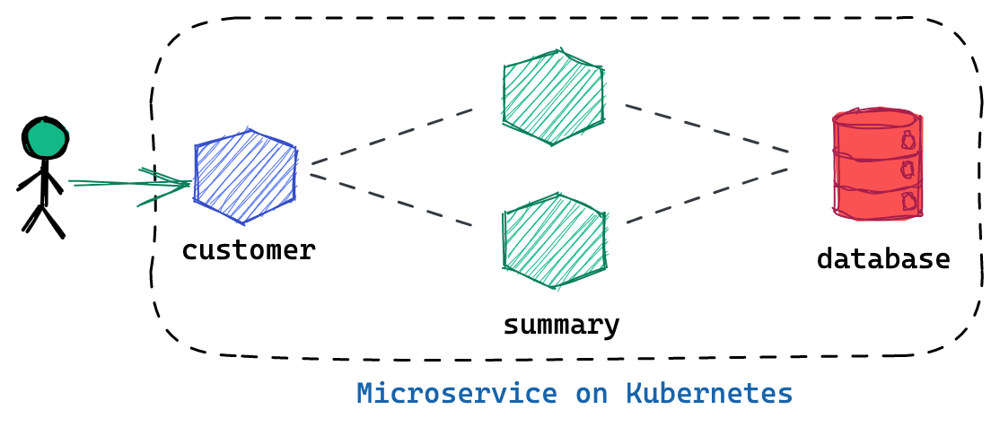
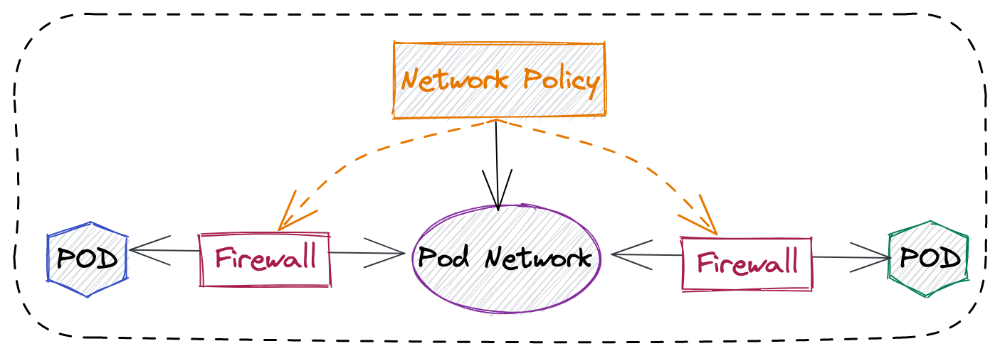
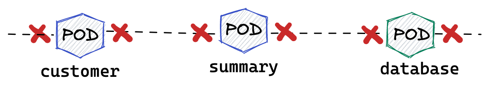
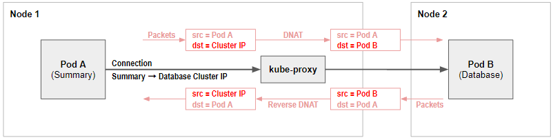
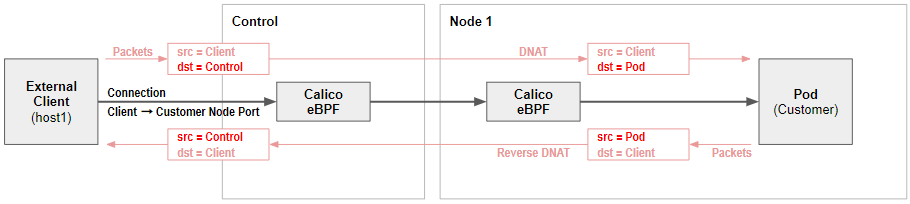
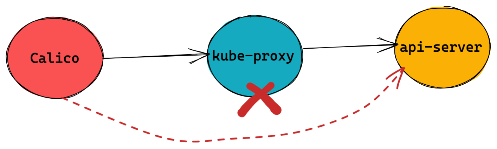

kubectl create -f https://docs.projectcalico.org/archive/v3.16/manifests/tigera-operator.yamlCalico
Table of Contents
- 安装
- 安全
- POD Connectivity
- Kubernetes Services Networking
- Calico with AWS
- AWS 上运行 Kubernetes 的两种方式
- AWS 上 Kubernetes 使用AWS CNI 和 Calico CNI 对比
- AWS 上 Kubernetes Security Group
- AWS 上 Kubernetes NetworkPolicy 和 Encryption
- AWS 上使用 Calico 的 5 种组合方式
- AWS 上构建 BYOC Kubernetes 集群工具
- AWS CNI + Calico Policy + iptables Dataplane
- AWS CNI + Calico Policy + Calico eBPF
- Calico CNI + Calico Policy + iptables Dataplane
- 基于 AWS Service 及 Calico 构建 Production Enabled Kubernetes 环境
安装
Install via operator
1. install the operator
2. Install Calico
cat <<EOF | kubectl apply -f -
apiVersion: operator.tigera.io/v1
kind: Installation
metadata:
name: default
spec:
calicoNetwork:
containerIPForwarding: Enabled
ipPools:
- cidr: 198.19.16.0/21
natOutgoing: Enabled
encapsulation: None
EOF3. Calico pods
$ kubectl get pods -n calico-system
NAME READY STATUS RESTARTS AGE
calico-typha-7fb7f4bd66-fvt89 1/1 Running 2 28m
calico-typha-7fb7f4bd66-gltp8 1/1 Running 2 28m
calico-node-42d6k 1/1 Running 1 28m
calico-typha-7fb7f4bd66-lq6b5 1/1 Running 2 28m
calico-node-tlvbb 1/1 Running 2 28m
calico-kube-controllers-57f767d97b-nxrnx 1/1 Running 3 28m
calico-node-l5n4s 1/1 Running 0 28m-
calico-node: Calico-node runs on every Kubernetes cluster node as a DaemonSet. It is responsible for enforcing network policy, setting up routes on the nodes, plus managing any virtual interfaces for IPIP, VXLAN, or WireGuard.
-
calico-typha: Typha is as a stateful proxy for the Kubernetes API server. It’s used by every calico-node pod to query and watch Kubernetes resources without putting excessive load on the Kubernetes API server. The Tigera Operator automatically scales the number of Typha instances as the cluster size grows.
-
calico-kube-controllers: Runs a variety of Calico specific controllers that automate synchronization of resources. For example, when a Kubernetes node is deleted, it tidies up any IP addresses or other Calico resources associated with the node.
|
Note
|
The Kubernetes network model does specify that pods can communicate with each other directly without NAT. But a pod communicating with another pod via a service is not direct communication, and normally will use NAT to change the connection destination from the service to the backing pod as part of load balancing. |
Install via Manifest
1. Download Manifest
curl https://docs.projectcalico.org/manifests/calico.yaml -O|
Note
|
Uncomment the CALICO_IPV4POOL_CIDR, and make sure the CIDR value equals the value of --pod-network-cidr.
|
2. Install Calico
kubectl apply -f calico.yaml|
Note
|
Refer to LINK for more details. |
3. Calico pods
$ kubectl get pods -A | grep calico
kube-system calico-kube-controllers-855445d444-8rx26 1/1 Running 2 38h
kube-system calico-node-56d8l 1/1 Running 2 38h
kube-system calico-node-r7ltw 1/1 Running 2 38h|
Note
|
Install via Manifest doesn’t contains the calico-typha, which has less performance comapre with Install via operator. |
Install calicoctl
1. Download
curl -o calicoctl -O -L "https://github.com/projectcalico/calicoctl/releases/download/v3.20.1/calicoctl"2. Copy to /usr/local/bin
chmod +x calicoctl
sudo cp calicoctl /usr/local/bin/3. Verify
$ calicoctl get nodes -o wide
NAME ASN IPV4 IPV6
control-plane (64512) 172.16.25.3/24
worker01 (64512) 172.16.25.4/24|
Note
|
Refer to https://docs.projectcalico.org/reference/calicoctl/ for calicoctl reference. |
Deploy YaoBank App
The YaoBank Demo App contains 3 Microservice:

-
Customer (which provides a simple web GUI)
-
Summary (some middleware business logic)
-
Database (the persistent datastore for the bank)
Originally from https://raw.githubusercontent.com/tigera/ccol1/main/yaobank.yaml, the nodeSelector are adjuested, and the docker image are retagged.
1. Deploy YaoBank App
kubectl apply -f yaobank.yaml2. Show YaoBank App
$ kubectl get pods -n yaobank --show-labels --no-headers
customer-cfc847564-dk56j 1/1 Running 0 82s app=customer,pod-template-hash=cfc847564,version=v1
database-644f4569dd-mnncp 1/1 Running 0 83s app=database,pod-template-hash=644f4569dd,version=v1
summary-5877cf8b57-9sc44 1/1 Running 0 82s app=summary,pod-template-hash=5877cf8b57,version=v1
summary-5877cf8b57-kjb7b 1/1 Running 0 82s app=summary,pod-template-hash=5877cf8b57,version=v13. Verify App
$ curl http://control-plane:30180/ -I
HTTP/1.0 200 OK
Content-Type: text/html; charset=utf-8
Content-Length: 593
Server: Werkzeug/0.12.2 Python/2.7.12
Date: Fri, 24 Sep 2021 16:59:18 GMT安全
为什么需要 Network Policy？

-
在容器平台需要基于IP地址或者应用端口进行流量控制（OSI L3、L4）
-
以应用为中心的设计，通过标签匹配的方式控制着应用POD如何被访问
-
Kubernetes 提供了 Network Policy API 接口，但是没有做实现，实现交给 CNI 插件实现厂商，实现与底层网络能力的解耦
-
Network Policy价值
-
攻击者花样更加聪明
-
攻击量更多
-
东西向安全
-
可以让非网络专家配置防火墙。
-
-
南北向安全：Calico Enterprise integrates with Fortinet firewalls, and make Fortinet understands ingress node or pod ip address.
Kubernetes Network Policy 与 Calico 额外增加的 Network Policy
| Kubernetes Network Policy | Calico Network Policy |
|---|---|
|
|
允许来自特定POD的入向访问
如下图所示为允许来自特定POD的入向访问，名称为database的POD只允许来自summary POD的入向访问
1. 查看 database POD 标签
$ kubectl get pods -n yaobank --show-labels | grep database
database-644f4569dd-mnncp 1/1 Running 0 22h app=database,pod-template-hash=644f4569dd,version=v12. 查看 summary POD 标签
$ kubectl get pods -n yaobank --show-labels | grep summary
summary-5877cf8b57-9sc44 1/1 Running 0 22h app=summary,pod-template-hash=5877cf8b57,version=v1
summary-5877cf8b57-kjb7b 1/1 Running 0 22h app=summary,pod-template-hash=5877cf8b57,version=v13. 分别在 customer POD 和summary POD 内访问database
CUSTOMER_POD=$(kubectl get pods -n yaobank -l app=customer -o name)
SUMMARY_POD=$(kubectl get pods -n yaobank -l app=summary -o name | head -n 1)
$ kubectl exec -it $CUSTOMER_POD -n yaobank -- bash
root@customer-cfc847564-dk56j:/app# curl http://database:2379/v2/keys?recursive=true -I -s | head -n 1
HTTP/1.1 200 OK
$ kubectl exec -it $SUMMARY_POD -n yaobank -- bash
root@summary-5877cf8b57-9sc44:/app# curl http://database:2379/v2/keys?recursive=true -I -s | head -n 1
HTTP/1.1 200 OK4. 添加 database-policy
cat <<EOF | kubectl apply -f -
kind: NetworkPolicy
apiVersion: networking.k8s.io/v1
metadata:
name: database-policy
namespace: yaobank
spec:
podSelector:
matchLabels:
app: database
ingress:
- from:
- podSelector:
matchLabels:
app: summary
ports:
- protocol: TCP
port: 2379
egress:
- to: []
EOF-
spec.podSelector.matchLabels- 指定要保护的目标 POD 为 database，具有app=database的标签。 -
spec.ingress.from.podSelector.matchLabels- 指定允许访问的 POD 需具有app=summary标签
5. 重复执行第3步，分别在 customer POD 和summary POD 内访问database*
root@customer-cfc847564-dk56j:/app# curl http://database:2379/v2/keys?recursive=true -I -m 3
curl: (28) Connection timed out after 3001 milliseconds
$ kubectl exec -it $SUMMARY_POD -n yaobank -- bash
root@summary-5877cf8b57-9sc44:/app# curl http://database:2379/v2/keys?recursive=true -I -s | head -n 1
HTTP/1.1 200 OK|
Note
|
对比第三步执行的结果，拒绝来自 customer POD 的请求，而允许来自 summary POD 的请求。 |
6. Clean Up
kubectl delete networkpolicy database-policy -n yaobank设置 Default Deny 策略
1. 访问服务
$ curl http://control-plane:30180 -m 3
<body>
<h1>Welcome to YAO Bank</h1>
<h2>Name: Spike Curtis</h2>
<h2>Balance: 2389.45</h2>
<p><a href="/logout">Log Out >></a></p>
</body>2. 设置 Default Deny 策略
cat <<EOF | kubectl apply -f -
apiVersion: networking.k8s.io/v1
kind: NetworkPolicy
metadata:
name: default-deny
namespace: yaobank
spec:
podSelector: {}
policyTypes:
- Ingress
- Egress
EOF3. 重复步骤 1，访问服务
$ curl http://control-plane:30180 -m 3
curl: (28) Operation timed out after 3001 milliseconds with 0 bytes received4. 分别在 customer POD 和 summary POD 中访问其他 POD
$ kubectl exec -it $CUSTOMER_POD -n yaobank -- bash
root@customer-cfc847564-dk56j:/app# curl http://summary -m 3
curl: (28) Resolving timed out after 3513 milliseconds
root@customer-cfc847564-dk56j:/app# curl http://database:2379/v2/keys?recursive=true -m 3
curl: (28) Resolving timed out after 3512 milliseconds
$ kubectl exec -it $SUMMARY_POD -n yaobank -- bash
root@summary-5877cf8b57-9sc44:/app# curl http://database:2379/v2/keys?recursive=true -m 3
curl: (28) Resolving timed out after 3515 milliseconds5. Clean UP
kubectl delete networkpolicy default-deny -n yaobankyaobank 策略控制最佳实践
1. 设置 Default Deny 策略
cat <<EOF | kubectl apply -f -
apiVersion: networking.k8s.io/v1
kind: NetworkPolicy
metadata:
name: default-deny
namespace: yaobank
spec:
podSelector: {}
policyTypes:
- Ingress
- Egress
EOF基于 namespace 设置 Default Deny 策略，namespace 内所有 POD 出向和入向都被禁止：

2. 基于所有 POD 设定入向和出向策略
cat <<EOF | kubectl apply -f -
kind: NetworkPolicy
apiVersion: networking.k8s.io/v1
metadata:
name: customer-policy
namespace: yaobank
spec:
podSelector:
matchLabels:
app: customer
ingress:
- ports:
- protocol: TCP
port: 80
egress:
- to: []
---
kind: NetworkPolicy
apiVersion: networking.k8s.io/v1
metadata:
name: summary-policy
namespace: yaobank
spec:
podSelector:
matchLabels:
app: summary
ingress:
- from:
- podSelector:
matchLabels:
app: customer
ports:
- protocol: TCP
port: 80
egress:
- to:
- podSelector:
matchLabels:
app: database
ports:
- protocol: TCP
port: 2379
---
kind: NetworkPolicy
apiVersion: networking.k8s.io/v1
metadata:
name: database-policy
namespace: yaobank
spec:
podSelector:
matchLabels:
app: database
ingress:
- from:
- podSelector:
matchLabels:
app: summary
ports:
- protocol: TCP
port: 2379
egress:
- to: []
EOFCalico 策略设定 yaobank 策略控制最佳实践
Kubernetes 定义的 Default Deny 只能基于单个 namespace 设定Default Deny，而 Calico 策略设定 Default Deny 是基于 Kubernetes 全局设定。
1. Default Deny
cat <<EOF | calicoctl apply -f -
apiVersion: projectcalico.org/v3
kind: GlobalNetworkPolicy
metadata:
name: default-app-policy
spec:
namespaceSelector: has(projectcalico.org/name) && projectcalico.org/name not in {"kube-system", "calico-system"}
types:
- Ingress
- Egress
EOF2. 更新全局策略，允许 DNS
cat <<EOF | calicoctl apply -f -
apiVersion: projectcalico.org/v3
kind: GlobalNetworkPolicy
metadata:
name: default-app-policy
spec:
namespaceSelector: has(projectcalico.org/name) && projectcalico.org/name not in {"kube-system", "calico-system"}
types:
- Ingress
- Egress
egress:
- action: Allow
protocol: UDP
destination:
selector: k8s-app == "kube-dns"
ports:
- 53
EOF3. 基于每个 POD 设定出入向策略
cat <<EOF | kubectl apply -f -
kind: NetworkPolicy
apiVersion: networking.k8s.io/v1
metadata:
name: database-policy
namespace: yaobank
spec:
podSelector:
matchLabels:
app: database
ingress:
- from:
- podSelector:
matchLabels:
app: summary
ports:
- protocol: TCP
port: 2379
egress:
- to: []
---
kind: NetworkPolicy
apiVersion: networking.k8s.io/v1
metadata:
name: customer-policy
namespace: yaobank
spec:
podSelector:
matchLabels:
app: customer
ingress:
- ports:
- protocol: TCP
port: 80
egress:
- to: []
---
kind: NetworkPolicy
apiVersion: networking.k8s.io/v1
metadata:
name: summary-policy
namespace: yaobank
spec:
podSelector:
matchLabels:
app: summary
ingress:
- from:
- podSelector:
matchLabels:
app: customer
ports:
- protocol: TCP
port: 80
egress:
- to:
- podSelector:
matchLabels:
app: database
ports:
- protocol: TCP
port: 2379
EOF4. 查看策略
$ calicoctl get GlobalNetworkPolicy
NAME
default-app-policy
$ kubectl get NetworkPolicy -n yaobank
NAME POD-SELECTOR AGE
customer-policy app=customer 4m16s
database-policy app=database 4m15s
summary-policy app=summary 4m15s5. 访问服务
$ curl http://control-plane:30180 -I -s | head -n 1
HTTP/1.0 200 OK6. Clean Up
kubectl delete NetworkPolicy summary-policy -n yaobank
kubectl delete NetworkPolicy customer-policy -n yaobank
kubectl delete NetworkPolicy database-policy -n yaobank
calicoctl delete GlobalNetworkPolicy default-app-policyManaging Trust Across Teams
1. Lockdown Cluster Egress
cat <<EOF | calicoctl apply -f -
apiVersion: projectcalico.org/v3
kind: GlobalNetworkPolicy
metadata:
name: egress-lockdown
spec:
order: 600
namespaceSelector: has(projectcalico.org/name) && projectcalico.org/name not in {"kube-system", "calico-system"}
serviceAccountSelector: internet-egress not in {"allowed"}
types:
- Egress
egress:
- action: Deny
destination:
notNets:
- 10.0.0.0/8
- 172.16.0.0/12
- 192.168.0.0/16
- 198.18.0.0/15
EOF2. Grant Selective Cluster Egress
kubectl label serviceaccount -n yaobank customer internet-egress=allowed3. Clean Up
calicoctl delete GlobalNetworkPolicy egress-lockdownNetwork Policy for Hosts and NodePorts
1. Network Policy for Nodes
cat <<EOF| calicoctl apply -f -
---
apiVersion: projectcalico.org/v3
kind: GlobalNetworkPolicy
metadata:
name: default-node-policy
spec:
selector: has(kubernetes.io/hostname)
ingress:
- action: Allow
protocol: TCP
source:
nets:
- 127.0.0.1/32
- action: Allow
protocol: UDP
source:
nets:
- 127.0.0.1/32
EOF2. Create Host Endpoints
calicoctl patch kubecontrollersconfiguration default --patch='{"spec": {"controllers": {"node": {"hostEndpoint": {"autoCreate": "Enabled"}}}}}'3. Restrict Access to Kubernetes NodePorts
cat <<EOF | calicoctl apply -f -
---
apiVersion: projectcalico.org/v3
kind: GlobalNetworkPolicy
metadata:
name: nodeport-policy
spec:
order: 100
selector: has(kubernetes.io/hostname)
applyOnForward: true
preDNAT: true
ingress:
- action: Deny
protocol: TCP
destination:
ports: ["30000:32767"]
- action: Deny
protocol: UDP
destination:
ports: ["30000:32767"]
EOF4. Selectively allow access to customer front end
cat <<EOF | calicoctl apply -f -
---
apiVersion: projectcalico.org/v3
kind: GlobalNetworkPolicy
metadata:
name: nodeport-policy
spec:
order: 100
selector: has(kubernetes.io/hostname)
applyOnForward: true
preDNAT: true
ingress:
- action: Allow
protocol: TCP
destination:
ports: [30180]
source:
nets:
- 198.19.15.254/32
- action: Deny
protocol: TCP
destination:
ports: ["30000:32767"]
- action: Deny
protocol: UDP
destination:
ports: ["30000:32767"]
EOF5. Clean Up
calicoctl delete GlobalNetworkPolicy default-node-policy
calicoctl delete GlobalNetworkPolicy nodeport-policyPOD Connectivity
Pods Network
1. Exec into the pod
CUSTOMER_POD=$(kubectl get pods -n yaobank -l app=customer -o name)
kubectl exec -ti -n yaobank $CUSTOMER_POD -- /bin/bash2. list interfaces
root@customer-574bd6cc75-9wx6m:/app# ip a
1: lo: <LOOPBACK,UP,LOWER_UP> mtu 65536 qdisc noqueue state UNKNOWN group default qlen 1000
link/loopback 00:00:00:00:00:00 brd 00:00:00:00:00:00
inet 127.0.0.1/8 scope host lo
valid_lft forever preferred_lft forever
inet6 ::1/128 scope host
valid_lft forever preferred_lft forever
3: eth0@if5: <BROADCAST,MULTICAST,UP,LOWER_UP> mtu 1410 qdisc noqueue state UP group default
link/ether 86:2d:a8:72:34:7d brd ff:ff:ff:ff:ff:ff link-netnsid 0
inet 198.19.22.147/32 brd 198.19.22.147 scope global eth0
valid_lft forever preferred_lft forever
inet6 fe80::842d:a8ff:fe72:347d/64 scope link
valid_lft forever preferred_lft forever-
There is a lo loopback interface with an IP address of 127.0.0.1. This is the standard loopback interface that every network namespace has by default. You can think of it as localhost for the pod itself.
-
There is an eth0 interface which has the pods actual IP address, 198.19.22.147. Notice this matches the IP address that kubectl get pods returned earlier.
3. ip link
root@customer-574bd6cc75-9wx6m:/app# ip -c link show up
1: lo: <LOOPBACK,UP,LOWER_UP> mtu 65536 qdisc noqueue state UNKNOWN mode DEFAULT group default qlen 1000
link/loopback 00:00:00:00:00:00 brd 00:00:00:00:00:00
3: eth0@if5: <BROADCAST,MULTICAST,UP,LOWER_UP> mtu 1410 qdisc noqueue state UP mode DEFAULT group default
link/ether 86:2d:a8:72:34:7d brd ff:ff:ff:ff:ff:ff link-netnsid 04. Routing Table
root@customer-574bd6cc75-9wx6m:/app# ip route
default via 169.254.1.1 dev eth0
169.254.1.1 dev eth0 scope link|
Note
|
This shows that the pod’s default route is out over the eth0 interface. i.e. Anytime it wants to send traffic to anywhere other than itself, it will send the traffic over eth0. (Note that the next hop address of 169.254.1.1 is a dummy address used by Calico. Every Calico networked pod sees this as its next hop.) |
5. Exit from the customer pod
exitWireGuard Encryption
1. enabling encryption
calicoctl patch felixconfiguration default --type='merge' -p '{"spec":{"wireguardEnabled":true}}'2. wireguardPublicKey
$ calicoctl get node node1 -o yaml
apiVersion: projectcalico.org/v3
kind: Node
metadata:
annotations:
projectcalico.org/kube-labels: '{"beta.kubernetes.io/arch":"amd64","beta.kubernetes.io/instance-type":"k3s","beta.kubernetes.io/os":"linux","k3s.io/hostname":"node1","k3s.io/internal-ip":"198.19.0.2","kubernetes.io/arch":"amd64","kubernetes.io/hostname":"node1","kubernetes.io/os":"linux","node.kubernetes.io/instance-type":"k3s"}'
creationTimestamp: "2021-08-25T14:20:09Z"
labels:
beta.kubernetes.io/arch: amd64
beta.kubernetes.io/instance-type: k3s
beta.kubernetes.io/os: linux
k3s.io/hostname: node1
k3s.io/internal-ip: 198.19.0.2
kubernetes.io/arch: amd64
kubernetes.io/hostname: node1
kubernetes.io/os: linux
node.kubernetes.io/instance-type: k3s
name: node1
resourceVersion: "22959"
uid: 15122ad5-dfd7-4dfe-9c26-7a637a7088be
spec:
bgp:
ipv4Address: 198.19.0.2/20
orchRefs:
- nodeName: node1
orchestrator: k8s
wireguard:
interfaceIPv4Address: 198.19.22.157
status:
podCIDRs:
- 198.19.17.0/24
wireguardPublicKey: bIuu8myw2pIonLtCqtTf2bmzg4Syswp8m7wKh8C6mT4=3. inspect wireguard from the interfaces
$ ssh node1
$ ip addr | grep wireguard
13: wireguard.cali: <POINTOPOINT,NOARP,UP,LOWER_UP> mtu 1400 qdisc noqueue state UNKNOWN group default qlen 1000
inet 198.19.22.157/32 brd 198.19.22.157 scope global wireguard.cali4. Disabling Encryption
calicoctl patch felixconfiguration default --type='merge' -p '{"spec":{"wireguardEnabled":false}}'IP Pools
-
IP Pools are calico resource which define ranges of addresses that the calico IP address management and IPAM CNI plugin can use.
$ calicoctl get IPPool default-ipv4-ippool -o yaml
apiVersion: projectcalico.org/v3
kind: IPPool
metadata:
creationTimestamp: "2021-08-25T14:43:21Z"
name: default-ipv4-ippool
resourceVersion: "1371"
uid: 218a5773-6fff-48fd-a175-486b9ad66faa
spec:
blockSize: 26
cidr: 198.19.16.0/21
ipipMode: Never
natOutgoing: true
nodeSelector: all()
vxlanMode: Never-
The IP Pool can be per Node, pernamespace
-
To improve performance and scalibility, Calico IPAM to allocates IPs to nodes in blocks.IP 分配是动态的，当一个NODE用完了 64 个地址后，Calico IPAM 会在分配一个新 Block，如果 Block 被分配完了，则会到相邻的 NODE的Block借一个IP。
BGP Peering
-
什么是 BGP
BGP 是一个标准的网络协议，大多数网络路由器都支持 BGP 协议，BGP 协议用来在路由器之间共享和同步路由信息。
Cluster IP Address Ranges
There are two address ranges that Kubernetes is normally configured with that are worth understanding:
-
The cluster pod CIDR is the range of IP addresses Kubernetes is expecting to be assigned to pods in the cluster.
-
The services CIDR is the range of IP addresses that are used for the Cluster IPs of Kubernetes Sevices (the virtual IP that corresponds to each Kubernetes Service).
$ kubectl cluster-info dump | grep -m 2 -E "service-cidr|cluster-cidr"
"k3s.io/node-args": "[\"server\",\"--flannel-backend\",\"none\",\"--cluster-cidr\",\"198.19.16.0/20\",\"--service-cidr\",\"198.19.32.0/20\",\"--write-kubeconfig-mode\",\"664\",\"--disable-network-policy\"]",Create IP Pools
1. Create externally routable IP Pool
cat <<EOF | calicoctl apply -f -
---
apiVersion: projectcalico.org/v3
kind: IPPool
metadata:
name: external-pool
spec:
cidr: 198.19.24.0/21
blockSize: 29
ipipMode: Never
natOutgoing: true
nodeSelector: "!all()"
EOF2. Examine BGP peering status
$ ssh node1
$ sudo calicoctl node status
Calico process is running.
IPv4 BGP status
+--------------+-------------------+-------+----------+-------------+
| PEER ADDRESS | PEER TYPE | STATE | SINCE | INFO |
+--------------+-------------------+-------+----------+-------------+
| 198.19.0.1 | node-to-node mesh | up | 07:25:58 | Established |
| 198.19.0.3 | node-to-node mesh | up | 07:25:56 | Established |
+--------------+-------------------+-------+----------+-------------+
IPv6 BGP status
No IPv6 peers found.3. Add a BGP Peer
cat <<EOF | calicoctl apply -f -
---
apiVersion: projectcalico.org/v3
kind: BGPPeer
metadata:
name: bgppeer-global-host1
spec:
peerIP: 198.19.15.254
asNumber: 64512
EOF4. Examine BGP peering status
$ ssh node1
$ sudo calicoctl node status
Calico process is running.
IPv4 BGP status
+---------------+-------------------+-------+----------+-------------+
| PEER ADDRESS | PEER TYPE | STATE | SINCE | INFO |
+---------------+-------------------+-------+----------+-------------+
| 198.19.0.1 | node-to-node mesh | up | 07:25:58 | Established |
| 198.19.0.3 | node-to-node mesh | up | 07:25:56 | Established |
| 198.19.15.254 | global | up | 08:39:33 | Established |
+---------------+-------------------+-------+----------+-------------+
IPv6 BGP status
No IPv6 peers found.5. Configure a Namespace to use External Routable IP Addresses
cat <<EOF| kubectl apply -f -
---
apiVersion: v1
kind: Namespace
metadata:
annotations:
cni.projectcalico.org/ipv4pools: '["external-pool"]'
name: external-ns
EOF6. Deploy Nginx
cat <<EOF| kubectl apply -f -
---
apiVersion: apps/v1
kind: Deployment
metadata:
name: nginx
namespace: external-ns
spec:
replicas: 1
selector:
matchLabels:
app: nginx
template:
metadata:
labels:
app: nginx
version: v1
spec:
containers:
- name: nginx
image: nginx
imagePullPolicy: IfNotPresent
nodeSelector:
kubernetes.io/hostname: node1
---
kind: NetworkPolicy
apiVersion: networking.k8s.io/v1
metadata:
name: nginx
namespace: external-ns
spec:
podSelector:
matchLabels:
app: nginx
policyTypes:
- Ingress
- Egress
ingress:
- ports:
- protocol: TCP
port: 80
EOF7. Access the NGINX pod from outside the cluster
$ kubectl get pods -n external-ns -o wide --no-headers
nginx-8c44c96c6-xtw74 1/1 Running 0 70s 198.19.28.208 node1 <none> <none>
$ curl 198.19.28.208 -I
HTTP/1.1 200 OK
Server: nginx/1.21.1
Date: Sat, 28 Aug 2021 08:48:10 GMT
Content-Type: text/html
Content-Length: 612
Last-Modified: Tue, 06 Jul 2021 14:59:17 GMT
Connection: keep-alive
ETag: "60e46fc5-264"
Accept-Ranges: bytes8. Check Calico IPAM allocations statistics
$ calicoctl ipam show
+----------+----------------+-----------+------------+-------------+
| GROUPING | CIDR | IPS TOTAL | IPS IN USE | IPS FREE |
+----------+----------------+-----------+------------+-------------+
| IP Pool | 198.19.16.0/21 | 2048 | 12 (1%) | 2036 (99%) |
| IP Pool | 198.19.24.0/21 | 2048 | 1 (0%) | 2047 (100%) |
+----------+----------------+-----------+------------+-------------+Kubernetes Services Networking
kube-proxy service debug
1. List the services
$ kubectl get svc -n yaobank
NAME TYPE CLUSTER-IP EXTERNAL-IP PORT(S) AGE
database ClusterIP 198.19.33.67 <none> 2379/TCP 2d23h
summary ClusterIP 198.19.46.158 <none> 80/TCP 2d23h
customer NodePort 198.19.32.122 <none> 80:30180/TCP 2d23h2. List the endpoints for each of the services
$ kubectl get endpoints -n yaobank
NAME ENDPOINTS AGE
customer 198.19.22.156:80 2d23h
database 198.19.21.74:2379 2d23h
summary 198.19.21.7:80,198.19.21.8:80 2d23h3. List the pods
$ kubectl get pods -n yaobank -o wide --no-headers
database-6c5db58d95-nnwsp 1/1 Running 2 2d23h 198.19.21.74 node2 <none> <none>
summary-85c56b76d7-v8vs6 1/1 Running 2 2d23h 198.19.21.7 control <none> <none>
summary-85c56b76d7-nn9fv 1/1 Running 2 2d23h 198.19.21.8 control <none> <none>
customer-574bd6cc75-9wx6m 1/1 Running 2 2d23h 198.19.22.156 node1 <none> <none>ClusterIP

1. KUBE-SERVICES → KUBE-SVC-XXXXXXXXXXXXXXXX
$ ssh control
$ sudo iptables -v --numeric --table nat --list KUBE-SERVICES | grep summary
0 0 KUBE-MARK-MASQ tcp -- * * !198.19.16.0/20 198.19.46.158 /* yaobank/summary:http cluster IP */ tcp dpt:80
0 0 KUBE-SVC-OIQIZJVJK6E34BR4 tcp -- * * 0.0.0.0/0 198.19.46.158 /* yaobank/summary:http cluster IP */ tcp dpt:802. KUBE-SVC-OIQIZJVJK6E34BR4 → KUBE-SEP-XXXXXXXXXXXXXXXX
$ sudo iptables -v --numeric --table nat --list KUBE-SVC-OIQIZJVJK6E34BR4
Chain KUBE-SVC-OIQIZJVJK6E34BR4 (1 references)
pkts bytes target prot opt in out source destination
0 0 KUBE-SEP-GRMQA4KZODSYCGHU all -- * * 0.0.0.0/0 0.0.0.0/0 /* yaobank/summary:http */ statistic mode random probability 0.50000000000
0 0 KUBE-SEP-HE4BCN24RMUDWA6V all -- * * 0.0.0.0/0 0.0.0.0/0 /* yaobank/summary:http */3. KUBE-SEP-XXXXXXXXXXXXXXXX → summary endpoint
$ sudo iptables -v --numeric --table nat --list KUBE-SEP-GRMQA4KZODSYCGHU
Chain KUBE-SEP-GRMQA4KZODSYCGHU (1 references)
pkts bytes target prot opt in out source destination
0 0 KUBE-MARK-MASQ all -- * * 198.19.21.7 0.0.0.0/0 /* yaobank/summary:http */
0 0 DNAT tcp -- * * 0.0.0.0/0 0.0.0.0/0 /* yaobank/summary:http */ tcp to:198.19.21.7:80NodePort

1. KUBE-SERVICES → KUBE-NODEPORTS
$ sudo iptables -v --numeric --table nat --list KUBE-SERVICES | grep KUBE-NODEPORTS
619 37158 KUBE-NODEPORTS all -- * * 0.0.0.0/0 0.0.0.0/0 /* kubernetes service nodeports; NOTE: this must be the last rule in this chain */ ADDRTYPE match dst-type LOCAL2. KUBE-NODEPORTS → KUBE-SVC-XXXXXXXXXXXXXXXX
$ sudo iptables -v --numeric --table nat --list KUBE-NODEPORTS | grep customer
0 0 KUBE-MARK-MASQ tcp -- * * 0.0.0.0/0 0.0.0.0/0 /* yaobank/customer:http */ tcp dpt:30180
0 0 KUBE-SVC-PX5FENG4GZJTCELT tcp -- * * 0.0.0.0/0 0.0.0.0/0 /* yaobank/customer:http */ tcp dpt:301803. KUBE-SVC-XXXXXXXXXXXXXXXX → KUBE-SEP-XXXXXXXXXXXXXXXX
$ sudo iptables -v --numeric --table nat --list KUBE-SVC-PX5FENG4GZJTCELT
Chain KUBE-SVC-PX5FENG4GZJTCELT (2 references)
pkts bytes target prot opt in out source destination
0 0 KUBE-SEP-5S2QR7W7CXIFMZTT all -- * * 0.0.0.0/0 0.0.0.0/0 /* yaobank/customer:http */4. KUBE-SEP-XXXXXXXXXXXXXXXX → customer endpoint
$ sudo iptables -v --numeric --table nat --list KUBE-SEP-5S2QR7W7CXIFMZTT
Chain KUBE-SEP-5S2QR7W7CXIFMZTT (1 references)
pkts bytes target prot opt in out source destination
0 0 KUBE-MARK-MASQ all -- * * 198.19.22.156 0.0.0.0/0 /* yaobank/customer:http */
0 0 DNAT tcp -- * * 0.0.0.0/0 0.0.0.0/0 /* yaobank/customer:http */ tcp to:198.19.22.156:80NodePort SNAT
1, Access the customer service via nodeport
$ curl 198.19.0.1:30180
$ curl 198.19.0.2:30180
$ curl 198.19.0.3:301802. View the customer pod logs
$ kubectl logs customer-574bd6cc75-9wx6m -n yaobank
198.19.0.1 - - [28/Aug/2021 15:14:21] "GET / HTTP/1.1" 200 -
198.19.0.2 - - [28/Aug/2021 15:16:54] "GET / HTTP/1.1" 200 -
198.19.0.3 - - [28/Aug/2021 15:17:03] "GET / HTTP/1.1" 200 -Calico Native Service Handling
-
Calico eBPF data plane supports native service handling.
-
Calico’s eBPF dataplane is an alternative to the default standard Linux dataplane (which is iptables based). The eBPF dataplane has a number of advantages:
-
It scales to higher throughput.
-
It uses less CPU per GBit.
-
It has native support for Kubernetes services (without needing kube-proxy) that:
-
Reduces first packet latency for packets to services.
-
Preserves external client source IP addresses all the way to the pod.
-
Supports DSR (Direct Server Return) for more efficient service routing.
-
Uses less CPU than kube-proxy to keep the dataplane in sync.
-
-
1. Configure Calico to connect directly to the API server
cat <<EOF | kubectl apply -f -
---
kind: ConfigMap
apiVersion: v1
metadata:
name: kubernetes-services-endpoint
namespace: tigera-operator
data:
KUBERNETES_SERVICE_HOST: "198.19.0.1"
KUBERNETES_SERVICE_PORT: "6443"
EOF2. recreated with the new configuration
kubectl delete pod -n tigera-operator -l k8s-app=tigera-operator3. Disable kube-proxy
calicoctl patch felixconfiguration default --patch='{"spec": {"bpfKubeProxyIptablesCleanupEnabled": false}}'4. Switch on eBPF mode
calicoctl patch felixconfiguration default --patch='{"spec": {"bpfEnabled": true}}'5. restart YAO Bank’s customer and summary pods
kubectl delete pod -n yaobank -l app=customer
kubectl delete pod -n yaobank -l app=summarySource IP preservation

1, Access the customer service via nodeport
$ curl 198.19.0.1:30180
$ curl 198.19.0.2:30180
$ curl 198.19.0.3:30180Advertising Services
1. Update Calico BGP configuration
cat <<EOF | calicoctl apply -f -
---
apiVersion: projectcalico.org/v3
kind: BGPConfiguration
metadata:
name: default
spec:
serviceClusterIPs:
- cidr: "198.19.32.0/20"
EOFCalico with AWS
AWS 上运行 Kubernetes 的两种方式
| 对比项 | EKS | BYOC |
|---|---|---|
定义 |
Kubernetes as a Managed Cloud Service
|
Bring Your Own Cloud
|
优点 |
|
|
缺点 |
|
|
AWS 上 Kubernetes 使用AWS CNI 和 Calico CNI 对比
| 项目 | AWS CNI | Calico CNI |
|---|---|---|
定义 |
|
|
优点 |
|
|
缺点 |
|
|
AWS 上 Kubernetes Security Group
| TYPE | DESC |
|---|---|
Security Group(EKS) |
|
Security Group(Pod) |
|
Security Group(BYOC) |
|
AWS 上 Kubernetes NetworkPolicy 和 Encryption
| TYPE | Network Policy | Encryption |
|---|---|---|
目的 |
|
|
方式 |
|
|
优势 |
|
|
缺点 |
|
AWS 上使用 Calico 的 5 种组合方式
| CNI | NetworkPolicy | Dataplane |
|---|---|---|
AWS-CNI |
iptables |
|
AWS-CNI |
Calico Policy |
iptables |
AWS-CNI |
Calico Policy |
Calico eBPF |
Calico CNI |
Calico Policy |
iptables |
Calico CNI |
Calico Policy |
Calico eBPF |
AWS 上构建 BYOC Kubernetes 集群工具
KOps
-
Like kubectl for clusters(kubectl 管理一个集群，KOps 可跨基础设施管理多个集群)
-
Build on top of kubectl and aws cli
-
Install KOps：https://kops.sigs.k8s.io/install/
-
-
Strengths
-
Builds production-grade clusters
-
Builds highly available cluster
-
Also provisions the necessary cloud infrastructure
-
Access to all of the Calico’s feature
-
AWS is offically support
-
idempotent
-
-
Consideration for setup KOps with AWS
-
Authentication/IAM - KOps use AWS SDK, so if AWS CLI is authenticated, then KOps is authenticated. On the other side, create an IAM user is recommend, with: AmazonEC2FullAccess, AmazonRoute53FullAccess, AmazonS3FullAccess, IAMFullAccess, AmazonVPCFullAccess.
-
AWS_ACCESS_KEY_IDandAWS_SECRET_ACCESS_KEYpair can used by KOps
-
-
DNS - DNS records are needed to setup a cluster with KOps
-
Cluster State Storage - Used to store Kops state and representation of the cluster, S3 Buckets be used.
-
kubeadm
-
Creates a minimum viable Kubernetes cluster that conforms to best practices
-
Strengths
-
As a build block in other ecosystems/installer tools
-
Very flexible across many environments
-
-
Shortcomings
-
more complex to use than KOps
-
kubespray
-
Install Kubernetes using ansible
-
Strengths
-
Builds highly available clusters
-
Fully customisable
-
Easier than kubeadm and more flexible than KOps
-
One Ansible playbook can build a cluster
-
Great if you already use Absible
-
-
Shortcomings
-
more complex to use than KOps
-
AWS CNI + Calico Policy + iptables Dataplane
集群创建
1. eksctl 创建集群
eksctl create cluster --name calicopolicy --version 1.18 --ssh-access --node-type t3.medium2. 验证集群创建成功
$ kubectl get nodes -A -o wide
NAME STATUS ROLES AGE VERSION INTERNAL-IP EXTERNAL-IP OS-IMAGE KERNEL-VERSION CONTAINER-RUNTIME
ip-192-168-46-0.ap-northeast-1.compute.internal Ready <none> 10m v1.18.20-eks-c9f1ce 192.168.46.0 3.113.245.244 Amazon Linux 2 4.14.248-189.473.amzn2.x86_64 docker://20.10.7
ip-192-168-76-87.ap-northeast-1.compute.internal Ready <none> 10m v1.18.20-eks-c9f1ce 192.168.76.87 3.112.56.246 Amazon Linux 2 4.14.248-189.473.amzn2.x86_64 docker://20.10.7
$ kubectl get pods -A -o wide
NAMESPACE NAME READY STATUS RESTARTS AGE IP NODE NOMINATED NODE READINESS GATES
kube-system aws-node-2gggk 1/1 Running 0 11m 192.168.46.0 ip-192-168-46-0.ap-northeast-1.compute.internal <none> <none>
kube-system aws-node-q9kcb 1/1 Running 0 11m 192.168.76.87 ip-192-168-76-87.ap-northeast-1.compute.internal <none> <none>
kube-system coredns-86f7d88d77-gdm9f 1/1 Running 0 19m 192.168.75.233 ip-192-168-76-87.ap-northeast-1.compute.internal <none> <none>
kube-system coredns-86f7d88d77-wlqgf 1/1 Running 0 19m 192.168.49.127 ip-192-168-46-0.ap-northeast-1.compute.internal <none> <none>
kube-system kube-proxy-5bxqv 1/1 Running 0 11m 192.168.46.0 ip-192-168-46-0.ap-northeast-1.compute.internal <none> <none>
kube-system kube-proxy-cldfs 1/1 Running 0 11m 192.168.76.87 ip-192-168-76-87.ap-northeast-1.compute.internal <none> <none>测试应用部署
1. Deploy Demo App
kubectl apply -f https://raw.githubusercontent.com/tigera/ccol2aws/main/yaobank.yaml2. 验证APP创建成功
$ kubectl get pods -n yaobank -o wide
NAME READY STATUS RESTARTS AGE IP NODE NOMINATED NODE READINESS GATES
customer-bf4c98479-2np9p 1/1 Running 0 42s 192.168.57.109 ip-192-168-46-0.ap-northeast-1.compute.internal <none> <none>
database-5b96655b86-88hwq 1/1 Running 0 42s 192.168.92.187 ip-192-168-76-87.ap-northeast-1.compute.internal <none> <none>
summary-85c56b76d7-c28j6 1/1 Running 0 41s 192.168.54.112 ip-192-168-46-0.ap-northeast-1.compute.internal <none> <none>
summary-85c56b76d7-td5rq 1/1 Running 0 41s 192.168.85.137 ip-192-168-76-87.ap-northeast-1.compute.internal <none> <none>AWS-CNI IPAM
1. 不同型号 EC2 节点支持的 IP 数量
$ aws ec2 describe-instance-types --filters Name=instance-type,Values=t3.* --query "InstanceTypes[].{Type: InstanceType, MaxENI: NetworkInfo.MaximumNetworkInterfaces, IPv4addr: NetworkInfo.Ipv4AddressesPerInterface}" --output table
--------------------------------------
| DescribeInstanceTypes |
+----------+----------+--------------+
| IPv4addr | MaxENI | Type |
+----------+----------+--------------+
| 15 | 4 | t3.2xlarge |
| 15 | 4 | t3.xlarge |
| 6 | 3 | t3.medium |
| 12 | 3 | t3.large |
| 2 | 2 | t3.micro |
| 2 | 2 | t3.nano |
| 4 | 3 | t3.small |
+----------+----------+--------------+-
POD 可用的最大 IP地址 - MaxENI * (IPv4addr-1 + 2)
-
t3.medium 最大 POD 可用地址为 17
-
t3.large 最大 POD 可用地址为 35
2. 查看当前已使用的 IP
$ kubectl get pods -A -o wide --no-headers | awk '{print $2, $7}'
aws-node-2gggk 192.168.46.0
aws-node-q9kcb 192.168.76.87
coredns-86f7d88d77-gdm9f 192.168.75.233
coredns-86f7d88d77-wlqgf 192.168.49.127
kube-proxy-5bxqv 192.168.46.0
kube-proxy-cldfs 192.168.76.87
customer-bf4c98479-2np9p 192.168.57.109
database-5b96655b86-88hwq 192.168.92.187
summary-85c56b76d7-c28j6 192.168.54.112
summary-85c56b76d7-td5rq 192.168.85.137|
Note
|
t3.medium 最大 POD 可用地址为 17，两个 t3.medium 最大 POD 可用地址为34，当前集群剩余可分配 POD IP 为24（34-10）。 |
3. 扩展 customer POD 到 30 个副本（部分会由于分不到 IP 地址而失败，新增 29 个 POD，可分配的 IP 为24个，有5个 POD不会启动成功）
$ kubectl scale -n yaobank --replicas 30 deployments/customer
// 已使用了 34 POD 地址
$ kubectl get pods -A | grep Running | wc -l
34
kubectl get pods -n yaobank | grep Pending | wc -l
54. POD 上报错日志
$ kubectl describe pod -n yaobank customer-bf4c98479-x9pkf
Name: customer-bf4c98479-x9pkf
Namespace: yaobank
Priority: 0
Node: <none>
Labels: app=customer
pod-template-hash=bf4c98479
version=v1
Annotations: kubernetes.io/psp: eks.privileged
Status: Pending
IP:
IPs: <none>
Controlled By: ReplicaSet/customer-bf4c98479
Containers:
customer:
Image: calico/yaobank-customer:certification
Port: 80/TCP
Host Port: 0/TCP
Environment: <none>
Mounts:
/var/run/secrets/kubernetes.io/serviceaccount from customer-token-gxgsc (ro)
Conditions:
Type Status
PodScheduled False
Volumes:
customer-token-gxgsc:
Type: Secret (a volume populated by a Secret)
SecretName: customer-token-gxgsc
Optional: false
QoS Class: BestEffort
Node-Selectors: <none>
Tolerations: node.kubernetes.io/not-ready:NoExecute op=Exists for 300s
node.kubernetes.io/unreachable:NoExecute op=Exists for 300s
Events:
Type Reason Age From Message
---- ------ ---- ---- -------
Warning FailedScheduling 90s (x9 over 11m) default-scheduler 0/2 nodes are available: 2 Too many pods.5. Scale Down the APP
kubectl scale -n yaobank --replicas 1 deployments/customerAWS ENI DEBUG
1. 查看计算节点 1 上的 POD
$ kubectl get pods -A -o wide | grep ip-192-168-46-0.ap-northeast-1.compute.internal
kube-system aws-node-2gggk 1/1 Running 0 56m 192.168.46.0 ip-192-168-46-0.ap-northeast-1.compute.internal <none> <none>
kube-system coredns-86f7d88d77-wlqgf 1/1 Running 0 65m 192.168.49.127 ip-192-168-46-0.ap-northeast-1.compute.internal <none> <none>
kube-system kube-proxy-5bxqv 1/1 Running 0 56m 192.168.46.0 ip-192-168-46-0.ap-northeast-1.compute.internal <none> <none>
yaobank summary-85c56b76d7-c28j6 1/1 Running 0 44m 192.168.54.112 ip-192-168-46-0.ap-northeast-1.compute.internal <none> <none>2. 登录到计算节点
$ kubectl get nodes -o wide | grep ip-192-168-46-0.ap-northeast-1.compute.internal | awk '{print $1, $7}'
ip-192-168-46-0.ap-northeast-1.compute.internal 3.113.245.244
$ ssh ec2-user@3.113.245.244*3. 查看 3 个 ENI *
$ ip addr
...
2: eth0: <BROADCAST,MULTICAST,UP,LOWER_UP> mtu 9001 qdisc mq state UP group default qlen 1000
link/ether 0e:5e:cc:73:90:c9 brd ff:ff:ff:ff:ff:ff
inet 192.168.46.0/19 brd 192.168.63.255 scope global dynamic eth0
valid_lft 2698sec preferred_lft 2698sec
inet6 fe80::c5e:ccff:fe73:90c9/64 scope link
valid_lft forever preferred_lft forever
...
28: eth1: <BROADCAST,MULTICAST,UP,LOWER_UP> mtu 9001 qdisc mq state UP group default qlen 1000
link/ether 0e:e7:e0:d9:b5:0d brd ff:ff:ff:ff:ff:ff
inet 192.168.47.196/19 brd 192.168.63.255 scope global eth1
valid_lft forever preferred_lft forever
inet6 fe80::ce7:e0ff:fed9:b50d/64 scope link
valid_lft forever preferred_lft forever
...
14: eth2: <BROADCAST,MULTICAST,UP,LOWER_UP> mtu 9001 qdisc mq state UP group default qlen 1000
link/ether 0e:90:9b:08:ca:19 brd ff:ff:ff:ff:ff:ff
inet 192.168.46.116/19 brd 192.168.63.255 scope global eth2
valid_lft forever preferred_lft forever
inet6 fe80::c90:9bff:fe08:ca19/64 scope link
valid_lft forever preferred_lft forever4. 查看 POD L2 Port
$ ip a
...
3: eni55c81bde47f: <BROADCAST,MULTICAST,UP,LOWER_UP> mtu 9001 qdisc noqueue state UP group default
link/ether e2:bd:60:03:d6:95 brd ff:ff:ff:ff:ff:ff link-netnsid 0
inet6 fe80::e0bd:60ff:fe03:d695/64 scope link
valid_lft forever preferred_lft forever
6: eni14acb186de7@if3: <BROADCAST,MULTICAST,UP,LOWER_UP> mtu 9001 qdisc noqueue state UP group default
link/ether 92:79:17:b2:0b:6a brd ff:ff:ff:ff:ff:ff link-netnsid 2
inet6 fe80::9079:17ff:feb2:b6a/64 scope link
valid_lft forever preferred_lft forever5. ip rule
$ ip rule
0: from all lookup local
512: from all to 192.168.49.127 lookup main
512: from all to 192.168.54.112 lookup main
512: from all to 192.168.62.196 lookup main
512: from all to 192.168.62.66 lookup main
512: from all to 192.168.57.109 lookup main
512: from all to 192.168.52.72 lookup main
512: from all to 192.168.43.112 lookup main
512: from all to 192.168.58.45 lookup main
512: from all to 192.168.54.134 lookup main
512: from all to 192.168.43.102 lookup main
512: from all to 192.168.60.236 lookup main
512: from all to 192.168.42.143 lookup main
512: from all to 192.168.53.163 lookup main
512: from all to 192.168.34.227 lookup main
1024: from all fwmark 0x80/0x80 lookup main
1536: from 192.168.52.72 to 192.168.0.0/16 lookup 3
1536: from 192.168.43.112 to 192.168.0.0/16 lookup 3
1536: from 192.168.58.45 to 192.168.0.0/16 lookup 3
1536: from 192.168.54.134 to 192.168.0.0/16 lookup 3
1536: from 192.168.43.102 to 192.168.0.0/16 lookup 3
1536: from 192.168.60.236 to 192.168.0.0/16 lookup 2
1536: from 192.168.42.143 to 192.168.0.0/16 lookup 2
1536: from 192.168.53.163 to 192.168.0.0/16 lookup 2
1536: from 192.168.34.227 to 192.168.0.0/16 lookup 2
32766: from all lookup main
32767: from all lookup default6. 查看路由表
$ ip route show table main
default via 192.168.32.1 dev eth0
169.254.169.254 dev eth0
192.168.32.0/19 dev eth0 proto kernel scope link src 192.168.46.0
192.168.34.227 dev enid9db68cfa09 scope link
192.168.42.143 dev eni7bb60820661 scope link
192.168.43.102 dev enif625a3b6ece scope link
192.168.43.112 dev eni84d1fe33efe scope link
192.168.49.127 dev eni55c81bde47f scope link
192.168.52.72 dev eni1cc215ba5a7 scope link
192.168.53.163 dev eni8229e014bcc scope link
192.168.54.112 dev eni14acb186de7 scope link
192.168.54.134 dev eni7ef47dfe8b7 scope link
192.168.57.109 dev enib7e715ac094 scope link
192.168.58.45 dev eni9628b5d8d6d scope link
192.168.60.236 dev enifedb39161ec scope link
192.168.62.66 dev eni028bc2a8670 scope link
192.168.62.196 dev eni29dcee60bb0 scope link
$ ip route show table 2
default via 192.168.32.1 dev eth1
192.168.32.1 dev eth1 scope link
$ ip route show table 3
default via 192.168.32.1 dev eth2
192.168.32.1 dev eth2 scope linkCalico Policy with AWS-CNI（不提供 IPAM，只做 L3/L4 安全管控）
1. 安装
kubectl apply -f https://raw.githubusercontent.com/aws/amazon-vpc-cni-k8s/v1.7.8/config/v1.7/calico.yaml2. 验证安装成功
$ kubectl get pods -n kube-system -o wide
NAME READY STATUS RESTARTS AGE IP NODE NOMINATED NODE READINESS GATES
aws-node-2gggk 1/1 Running 0 86m 192.168.46.0 ip-192-168-46-0.ap-northeast-1.compute.internal <none> <none>
aws-node-q9kcb 1/1 Running 0 86m 192.168.76.87 ip-192-168-76-87.ap-northeast-1.compute.internal <none> <none>
calico-node-fbc9m 1/1 Running 0 2m9s 192.168.76.87 ip-192-168-76-87.ap-northeast-1.compute.internal <none> <none>
calico-node-wtzvm 1/1 Running 0 2m9s 192.168.46.0 ip-192-168-46-0.ap-northeast-1.compute.internal <none> <none>
calico-typha-5ff6788794-x95cv 1/1 Running 0 2m10s 192.168.46.0 ip-192-168-46-0.ap-northeast-1.compute.internal <none> <none>
calico-typha-horizontal-autoscaler-7d57c996b4-c6hqx 1/1 Running 0 2m10s 192.168.62.66 ip-192-168-46-0.ap-northeast-1.compute.internal <none> <none>
coredns-86f7d88d77-gdm9f 1/1 Running 0 94m 192.168.75.233 ip-192-168-76-87.ap-northeast-1.compute.internal <none> <none>
coredns-86f7d88d77-wlqgf 1/1 Running 0 94m 192.168.49.127 ip-192-168-46-0.ap-northeast-1.compute.internal <none> <none>
kube-proxy-5bxqv 1/1 Running 0 86m 192.168.46.0 ip-192-168-46-0.ap-northeast-1.compute.internal <none> <none>
kube-proxy-cldfs 1/1 Running 0 86m 192.168.76.87 ip-192-168-76-87.ap-northeast-1.compute.internal <none> <none>|
Note
|
4 个calico DeamonSet POD 创建，使用 Node 节点。 |
3. 记录 POD 名称到脚本中
export CUSTOMER_POD=$(kubectl get pods -n yaobank -l app=customer -o name)
export SUMMARY_POD=$(kubectl get pods -n yaobank -l app=summary -o name | head -n 1)
echo "export CUSTOMER_POD=${CUSTOMER_POD}" >> ccol2awsexports.sh
echo "export SUMMARY_POD=${SUMMARY_POD}" >> ccol2awsexports.sh
chmod 700 ccol2awsexports.sh
. ccol2awsexports.sh4. 从 cusomer POD 访问 database POD（访问成功）
$ kubectl exec -it $CUSTOMER_POD -n yaobank -c customer -- /bin/bash
root@customer-bf4c98479-b4t8z:/app# curl http://database:2379/v2/keys?recursive=true -I
HTTP/1.1 200 OK
Content-Type: application/json
X-Etcd-Cluster-Id: 7e27652122e8b2ae
X-Etcd-Index: 18
X-Raft-Index: 9861
X-Raft-Term: 5
Date: Tue, 02 Nov 2021 02:40:10 GMT
Content-Length: 17155. 添加全局 Default Deny
cat <<EOF | calicoctl apply -f -
apiVersion: projectcalico.org/v3
kind: GlobalNetworkPolicy
metadata:
name: default-app-policy
spec:
namespaceSelector: has(projectcalico.org/name) && projectcalico.org/name not in {"kube-system", "calico-system"}
types:
- Ingress
- Egress
egress:
- action: Allow
protocol: UDP
destination:
selector: k8s-app == "kube-dns"
ports:
- 53
EOF6. 从 cusomer POD 访问 database POD（访问失败）
$ kubectl exec -it $CUSTOMER_POD -n yaobank -c customer -- /bin/bash
root@customer-bf4c98479-b4t8z:/app# curl http://database:2379/v2/keys?recursive=true -I --connect-timeout 3
curl: (28) Connection timed out after 3000 milliseconds
root@customer-bf4c98479-b4t8z:/app# exit7. 添加 Policy
cat <<EOF | kubectl apply -f -
---
kind: NetworkPolicy
apiVersion: networking.k8s.io/v1
metadata:
name: database-policy
namespace: yaobank
spec:
podSelector:
matchLabels:
app: database
ingress:
- from:
- podSelector:
matchLabels:
app: summary
ports:
- protocol: TCP
port: 2379
egress:
- to: []
---
kind: NetworkPolicy
apiVersion: networking.k8s.io/v1
metadata:
name: customer-policy
namespace: yaobank
spec:
podSelector:
matchLabels:
app: customer
ingress:
- ports:
- protocol: TCP
port: 80
egress:
- to: []
---
kind: NetworkPolicy
apiVersion: networking.k8s.io/v1
metadata:
name: summary-policy
namespace: yaobank
spec:
podSelector:
matchLabels:
app: summary
ingress:
- from:
- podSelector:
matchLabels:
app: customer
ports:
- protocol: TCP
port: 80
egress:
- to:
- podSelector:
matchLabels:
app: database
ports:
- protocol: TCP
port: 2379
EOF8. 从 cusomer POD 访问 database POD（访问失败，Policy 允许 customer 访问 summary，但不允许 customer 访问 database）
$ kubectl exec -it $CUSTOMER_POD -n yaobank -c customer -- /bin/bash
root@customer-bf4c98479-b4t8z:/app# curl http://database:2379/v2/keys?recursive=true -I --connect-timeout 3
curl: (28) Connection timed out after 3000 milliseconds
root@customer-bf4c98479-b4t8z:/app# exit9. 从 summary 访问 database，访问成功
$ kubectl exec -it $SUMMARY_POD -n yaobank -c summary -- /bin/bash
root@summary-85c56b76d7-c28j6:/app# http://database:2379/v2/keys?recursive=true -I
bash: http://database:2379/v2/keys?recursive=true: No such file or directory
root@summary-85c56b76d7-c28j6:/app# curl http://database:2379/v2/keys?recursive=true -I
HTTP/1.1 200 OK
Content-Type: application/json
X-Etcd-Cluster-Id: 7e27652122e8b2ae
X-Etcd-Index: 18
X-Raft-Index: 11118
X-Raft-Term: 5
Date: Tue, 02 Nov 2021 02:50:39 GMT
Content-Length: 1715ELB 发布服务
1. 创建 LoadBalancer 类型的 Service 将会关联
cat << EOF | kubectl apply -f -
apiVersion: v1
kind: Service
metadata:
name: yaobank-customer
namespace: yaobank
spec:
selector:
app: customer
ports:
- port: 80
targetPort: 80
type: LoadBalancer
EOF-
更多关于 ELB：https://docs.aws.amazon.com/eks/latest/userguide/aws-load-balancer-controller.html
2. 查看服务
$ kubectl get svc -n yaobank
NAME TYPE CLUSTER-IP EXTERNAL-IP PORT(S) AGE
customer NodePort 10.100.175.236 <none> 80:30180/TCP 93m
database ClusterIP 10.100.193.59 <none> 2379/TCP 93m
summary ClusterIP 10.100.89.160 <none> 80/TCP 93m
yaobank-customer LoadBalancer 10.100.220.202 a9988b2b7630d491ead01ef28d21f90a-1857127968.ap-northeast-1.elb.amazonaws.com 80:31159/TCP 2m5s3. 通过域名访问
$ curl a9988b2b7630d491ead01ef28d21f90a-1857127968.ap-northeast-1.elb.amazonaws.com -I
HTTP/1.0 200 OK
Content-Type: text/html; charset=utf-8
Content-Length: 593
Server: Werkzeug/0.12.2 Python/2.7.12
Date: Tue, 02 Nov 2021 02:57:57 GMT4. 查看 customer POD Access 日志
$ kubectl logs -n yaobank $CUSTOMER_POD
* Running on http://0.0.0.0:80/ (Press CTRL+C to quit)
192.168.46.0 - - [02/Nov/2021 02:54:05] "GET / HTTP/1.0" 200 -
192.168.46.0 - - [02/Nov/2021 02:57:42] "GET / HTTP/1.1" 200 -
192.168.76.87 - - [02/Nov/2021 02:57:42] "GET / HTTP/1.1" 200 -
192.168.76.87 - - [02/Nov/2021 02:57:44] "GET /favicon.ico HTTP/1.1" 404 -
192.168.46.0 - - [02/Nov/2021 02:57:57] "HEAD / HTTP/1.1" 200 -5. 删除 LoadBalancer 类型的 Service
kubectl delete service yaobank-customer -n=yaobank删除集群
eksctl delete cluster --name calicopolicyAWS CNI + Calico Policy + Calico eBPF
安装部署
1. 基于支持 eBPF 的节点初始化 EKS（Linux Kernel 5.4 以上，本部的使用Bottlerocket）
eksctl create cluster --name calicoebpf --version 1.18 --ssh-access --node-type t3.medium --node-ami-family Bottlerocket2. 验证 EKS 部署（两个节点的 EKS 部署安装，KERNEL 版本是 5.4.141，OS 镜像是 Bottlerocket；6 个 POD 启动，2 个 coredns，2 个 kube-proxy，2 个 aws-node 提供 AWS-CNI）
$ kubectl get nodes -o wide
NAME STATUS ROLES AGE VERSION INTERNAL-IP EXTERNAL-IP OS-IMAGE KERNEL-VERSION CONTAINER-RUNTIME
ip-192-168-30-253.ap-northeast-1.compute.internal Ready <none> 5m50s v1.18.20 192.168.30.253 35.76.115.233 Bottlerocket OS 1.3.0 (aws-k8s-1.18) 5.4.141 containerd://1.5.5+bottlerocket
ip-192-168-47-152.ap-northeast-1.compute.internal Ready <none> 5m48s v1.18.20 192.168.47.152 3.112.41.202 Bottlerocket OS 1.3.0 (aws-k8s-1.18) 5.4.141 containerd://1.5.5+bottlerocket
$ kubectl get pods -A -o wide
NAMESPACE NAME READY STATUS RESTARTS AGE IP NODE NOMINATED NODE READINESS GATES
kube-system aws-node-blqp4 1/1 Running 0 14m 192.168.30.253 ip-192-168-30-253.ap-northeast-1.compute.internal <none> <none>
kube-system aws-node-rg969 1/1 Running 0 14m 192.168.47.152 ip-192-168-47-152.ap-northeast-1.compute.internal <none> <none>
kube-system coredns-86f7d88d77-mmlbg 1/1 Running 0 21m 192.168.14.186 ip-192-168-30-253.ap-northeast-1.compute.internal <none> <none>
kube-system coredns-86f7d88d77-v776s 1/1 Running 0 21m 192.168.2.187 ip-192-168-30-253.ap-northeast-1.compute.internal <none> <none>
kube-system kube-proxy-lst24 1/1 Running 0 14m 192.168.30.253 ip-192-168-30-253.ap-northeast-1.compute.internal <none> <none>
kube-system kube-proxy-ssmqd 1/1 Running 0 14m 192.168.47.152 ip-192-168-47-152.ap-northeast-1.compute.internal <none> <none>3. 安装 Calico
kubectl apply -f https://raw.githubusercontent.com/tigera/ccol2aws/main/calico-eks.yaml4. 验证 Calico 部署
$ kubectl get pods -A -o wide | grep calico
kube-system calico-node-dcsnv 1/1 Running 0 104s 192.168.47.152 ip-192-168-47-152.ap-northeast-1.compute.internal <none> <none>
kube-system calico-node-gtwv8 1/1 Running 0 104s 192.168.30.253 ip-192-168-30-253.ap-northeast-1.compute.internal <none> <none>
kube-system calico-typha-6dbb575c97-xhtg8 1/1 Running 0 104s 192.168.47.152 ip-192-168-47-152.ap-northeast-1.compute.internal <none> <none>
kube-system calico-typha-horizontal-autoscaler-9f999cfc5-bxctw 1/1 Running 0 103s 192.168.23.14 ip-192-168-30-253.ap-northeast-1.compute.internal <none> <none>开启 eBPF Dataplane
默认，Kubernetes 中 Calico 和 api-server 通信是通过 kube-proxy 来进行的，开启 eBPF Dataplane 需要删除 kube-proxy，删除 kube-proxy 之前需要 Calico 直接和 api-server 通信。

1. 获取 API Server 的地址
$ kubectl get configmap -n kube-system kube-proxy -o jsonpath='{.data.kubeconfig}' | grep server
server: https://5e8ff3570dd657770971f662fc84a38a.yl4.ap-northeast-1.eks.amazonaws.com|
Note
|
EKS 集群中管理节点是集中部署的，对用户者来说，管理节点不可见，用户所获得到的 EKS 只有计算节点。 |
2. 创建一个 configmap 保存 API Server 的地址和端口
cat <<EOF | kubectl apply -f -
kind: ConfigMap
apiVersion: v1
metadata:
name: kubernetes-services-endpoint
namespace: kube-system
data:
KUBERNETES_SERVICE_HOST: "5e8ff3570dd657770971f662fc84a38a.yl4.ap-northeast-1.eks.amazonaws.com"
KUBERNETES_SERVICE_PORT: "443"
EOF|
Note
|
calico-node 会从该配置文件中读取 api-server 的地址和端口，从而直接和 api-server 通信。 |
3. 创建 Calico IPPool
calicoctl apply -f - <<EOF
apiVersion: projectcalico.org/v3
kind: IPPool
metadata:
name: vpc-subnet
spec:
cidr: 192.168.0.0/16
natOutgoing: true
nodeSelector: !all()
EOF|
Note
|
EKS 默认 POD CIRD 是 192.168.0.0/16。
|
*4. Restart calico-node, calico-typha, and calico-kube-controllers *
kubectl delete pod -n kube-system -l k8s-app=calico-node
kubectl delete pod -n kube-system -l k8s-app=calico-kube-controllers
kubectl delete pod -n kube-system -l k8s-app=calico-typha5. Disable kube-proxy
kubectl patch ds -n kube-system kube-proxy -p '{"spec":{"template":{"spec":{"nodeSelector":{"non-calico": "true"}}}}}'6. 修改 Calico felixconfiguration 配置，开启 eBPF Dataplane
calicoctl patch felixconfiguration default --patch='{"spec": {"bpfEnabled": true}}'7. coredns 更新
kubectl delete pod -n kube-system -l k8s-app=kube-dns8. 验证 Kubernetes 当前状态
$ kubectl get pods -A -o wide
NAMESPACE NAME READY STATUS RESTARTS AGE IP NODE NOMINATED NODE READINESS GATES
kube-system aws-node-blqp4 1/1 Running 0 50m 192.168.30.253 ip-192-168-30-253.ap-northeast-1.compute.internal <none> <none>
kube-system aws-node-rg969 1/1 Running 0 50m 192.168.47.152 ip-192-168-47-152.ap-northeast-1.compute.internal <none> <none>
kube-system calico-node-28k24 1/1 Running 0 5m54s 192.168.47.152 ip-192-168-47-152.ap-northeast-1.compute.internal <none> <none>
kube-system calico-node-q69k8 1/1 Running 0 5m53s 192.168.30.253 ip-192-168-30-253.ap-northeast-1.compute.internal <none> <none>
kube-system calico-typha-6dbb575c97-x6zjk 1/1 Running 0 5m50s 192.168.30.253 ip-192-168-30-253.ap-northeast-1.compute.internal <none> <none>
kube-system calico-typha-horizontal-autoscaler-9f999cfc5-plwm9 1/1 Running 0 5m11s 192.168.50.191 ip-192-168-47-152.ap-northeast-1.compute.internal <none> <none>
kube-system coredns-86f7d88d77-cwccw 1/1 Running 0 44s 192.168.23.14 ip-192-168-30-253.ap-northeast-1.compute.internal <none> <none>
kube-system coredns-86f7d88d77-hwjnw 1/1 Running 0 44s 192.168.32.76 ip-192-168-47-152.ap-northeast-1.compute.internal <none> <none>|
Note
|
kube-proxy 被删除，当前 EKS kube-system 下运行着 3 类 POD：aws-node for AWS-CNI，calico for Policy and sBPF，coredns for internal DNS。 |
部署测试 APP
1. 部署
kubectl apply -f https://raw.githubusercontent.com/tigera/ccol2aws/main/yaobank.yaml
2. 验证
$ kubectl get pods -o wide -n yaobank
NAME READY STATUS RESTARTS AGE IP NODE NOMINATED NODE READINESS GATES
customer-bf4c98479-ww2b5 1/1 Running 0 103s 192.168.34.103 ip-192-168-47-152.ap-northeast-1.compute.internal <none> <none>
database-5b96655b86-cc9gb 1/1 Running 0 103s 192.168.14.186 ip-192-168-30-253.ap-northeast-1.compute.internal <none> <none>
summary-85c56b76d7-8xhvr 1/1 Running 0 103s 192.168.59.216 ip-192-168-47-152.ap-northeast-1.compute.internal <none> <none>
summary-85c56b76d7-ww8n6 1/1 Running 0 103s 192.168.26.219 ip-192-168-30-253.ap-northeast-1.compute.internal <none> <none>3. 为方便后续测试，将 CUSTOMER POD 和SUMMARY POD 名称保存到脚本
export CUSTOMER_POD=$(kubectl get pods -n yaobank -l app=customer -o name)
export SUMMARY_POD=$(kubectl get pods -n yaobank -l app=summary -o name | head -n 1)
echo "export CUSTOMER_POD=${CUSTOMER_POD}" >> ccol2awsexports.sh
echo "export SUMMARY_POD=${SUMMARY_POD}" >> ccol2awsexports.sh访问服务
1. 创建 Loadbalancer 类型的Service
cat << EOF | kubectl apply -f -
apiVersion: v1
kind: Service
metadata:
name: yaobank-customer
namespace: yaobank
spec:
selector:
app: customer
ports:
- port: 80
targetPort: 80
type: LoadBalancer
EOF2. 查看 Service
$ kubectl get svc -n yaobank
NAME TYPE CLUSTER-IP EXTERNAL-IP PORT(S) AGE
customer NodePort 10.100.145.100 <none> 80:30180/TCP 26m
database ClusterIP 10.100.206.163 <none> 2379/TCP 26m
summary ClusterIP 10.100.216.117 <none> 80/TCP 26m
yaobank-customer LoadBalancer 10.100.176.85 aa2a64471ffee4d6f9618b063c881734-617348242.ap-northeast-1.elb.amazonaws.com 80:30716/TCP 17m3. 服务访问
$ curl aa2a64471ffee4d6f9618b063c881734-617348242.ap-northeast-1.elb.amazonaws.com -I
HTTP/1.0 200 OK
Content-Type: text/html; charset=utf-8
Content-Length: 593
Server: Werkzeug/0.12.2 Python/2.7.12
Date: Wed, 03 Nov 2021 06:25:48 GMT4. 查看 Customer POD Access 日志
$ kubectl logs -n yaobank $CUSTOMER_POD
* Running on http://0.0.0.0:80/ (Press CTRL+C to quit)
192.168.35.47 - - [03/Nov/2021 06:16:52] "GET / HTTP/1.1" 200 -
192.168.35.47 - - [03/Nov/2021 06:25:45] "GET / HTTP/1.1" 200 -
192.168.35.47 - - [03/Nov/2021 06:25:48] "HEAD / HTTP/1.1" 200 -
192.168.35.47 - - [03/Nov/2021 06:27:03] "GET / HTTP/1.1" 200 -5. Delete ELB
kubectl delete service yaobank-customer -n=yaobank开启源地址透传（Source IP Preservation）
1. 在创建 Service 是通过设定 service.beta.kubernetes.io/aws-load-balancer-type 为 nlb 开启源地址透传
cat << EOF | kubectl apply -f -
apiVersion: v1
kind: Service
metadata:
name: yaobank-customer
namespace: yaobank
annotations:
service.beta.kubernetes.io/aws-load-balancer-type: "nlb"
spec:
selector:
app: customer
ports:
- port: 80
targetPort: 80
type: LoadBalancer
EOF2. 查看服务
$ kubectl get svc -n yaobank yaobank-customer
NAME TYPE CLUSTER-IP EXTERNAL-IP PORT(S) AGE
yaobank-customer LoadBalancer 10.100.167.26 ae9ef3a157df94411a7c5b5b2b038a8b-09836b10c4bd6927.elb.ap-northeast-1.amazonaws.com 80:30330/TCP 115s4. 访问服务
$ curl ae9ef3a157df94411a7c5b5b2b038a8b-09836b10c4bd6927.elb.ap-northeast-1.amazonaws.com -I
HTTP/1.0 200 OK
Content-Type: text/html; charset=utf-8
Content-Length: 593
Server: Werkzeug/0.12.2 Python/2.7.12
Date: Wed, 03 Nov 2021 06:39:59 GMT5. 从 Customer 日志中查看源地址
$ kubectl logs -n yaobank $CUSTOMER_POD
* Running on http://0.0.0.0:80/ (Press CTRL+C to quit)
192.168.35.47 - - [03/Nov/2021 06:16:52] "GET / HTTP/1.1" 200 -
192.168.35.47 - - [03/Nov/2021 06:25:45] "GET / HTTP/1.1" 200 -
192.168.35.47 - - [03/Nov/2021 06:25:48] "HEAD / HTTP/1.1" 200 -
192.168.35.47 - - [03/Nov/2021 06:27:03] "GET / HTTP/1.1" 200 -
106.38.20.203 - - [03/Nov/2021 06:38:58] "GET / HTTP/1.1" 200 -
106.38.20.203 - - [03/Nov/2021 06:39:59] "HEAD / HTTP/1.1" 200 -|
Note
|
106.38.20.203 地址为中国 北京 电信地址，Customer POD 客户端地址为源客户端地址。
|
Clean Up
eksctl delete cluster --name calicoebpfCalico CNI + Calico Policy + iptables Dataplane
EKS 部署
1. 创建一个 EKS 集群
eksctl create cluster --name calicocni --without-nodegroup|
Note
|
--without-nodegroup 初始化一个集群但不部署计算节点。
|
2. 查看计算节点
$ kubectl get nodes
No resources found|
Note
|
上面步骤 1 执行没有创建计算节点，而在 EKS 下，用户看不到管理节点信息，所以上面 kubectl get nodes 的结果为空。
|
3. 查看 POD
$ kubectl get pods -A -o wide
NAMESPACE NAME READY STATUS RESTARTS AGE IP NODE NOMINATED NODE READINESS GATES
kube-system coredns-86f7d88d77-7fbzl 0/1 Pending 0 18m <none> <none> <none> <none>
kube-system coredns-86f7d88d77-wjqsg 0/1 Pending 0 18m <none> <none> <none> <none>|
Note
|
coredns POD 状态为 Pending，在计算节点和 CNI 网络初始化完成后会进入运行状态。 |
4. 删除 aws cni 相关的 daemonset
kubectl delete daemonset -n kube-system aws-node|
Note
|
本部分使用 Calico CNI，所以删除 aws-node daemonset。 |
部署 Calico CNI
1. 部署
kubectl apply -f https://raw.githubusercontent.com/tigera/ccol2aws/main/calico-vxlan.yaml2. 部署验证
$ kubectl get pods -A -o wide
NAMESPACE NAME READY STATUS RESTARTS AGE IP NODE NOMINATED NODE READINESS GATES
kube-system calico-kube-controllers-54658cf6f7-j2xdj 0/1 Pending 0 2m18s <none> <none> <none> <none>
kube-system coredns-86f7d88d77-7fbzl 0/1 Pending 0 25m <none> <none> <none> <none>
kube-system coredns-86f7d88d77-wjqsg 0/1 Pending 0 25m <none> <none> <none> <none>|
Note
|
calico-kube-controllers POD 处于 Pending 状态，计算节点初始化后完成部署，并会启动 calico-node 及 calico-typha POD。 |
创建一组 EKS 计算节点
1. 创建计算节点
eksctl create nodegroup --cluster calicocni --node-type t3.medium --node-ami-family Bottlerocket --max-pods-per-node 100 --ssh-access2. 查看创建的计算节点
$ kubectl get nodes -o wide
NAME STATUS ROLES AGE VERSION INTERNAL-IP EXTERNAL-IP OS-IMAGE KERNEL-VERSION CONTAINER-RUNTIME
ip-192-168-11-183.ap-northeast-1.compute.internal Ready <none> 72s v1.18.20 192.168.11.183 3.115.11.42 Bottlerocket OS 1.3.0 (aws-k8s-1.18) 5.4.141 containerd://1.5.5+bottlerocket
ip-192-168-71-154.ap-northeast-1.compute.internal Ready <none> 71s v1.18.20 192.168.71.154 35.72.30.131 Bottlerocket OS 1.3.0 (aws-k8s-1.18) 5.4.141 containerd://1.5.5+bottlerocket3. 查看运行的 POD
$ kubectl get pods -A -o wide
NAMESPACE NAME READY STATUS RESTARTS AGE IP NODE NOMINATED NODE READINESS GATES
kube-system calico-kube-controllers-54658cf6f7-j2xdj 1/1 Running 0 11m 172.16.144.194 ip-192-168-71-154.ap-northeast-1.compute.internal <none> <none>
kube-system calico-node-cfj68 1/1 Running 0 105s 192.168.71.154 ip-192-168-71-154.ap-northeast-1.compute.internal <none> <none>
kube-system calico-node-tp4rc 1/1 Running 0 106s 192.168.11.183 ip-192-168-11-183.ap-northeast-1.compute.internal <none> <none>
kube-system coredns-86f7d88d77-7fbzl 1/1 Running 0 35m 172.16.144.195 ip-192-168-71-154.ap-northeast-1.compute.internal <none> <none>
kube-system coredns-86f7d88d77-wjqsg 1/1 Running 0 35m 172.16.144.193 ip-192-168-71-154.ap-northeast-1.compute.internal <none> <none>
kube-system kube-proxy-n8bbt 1/1 Running 0 105s 192.168.71.154 ip-192-168-71-154.ap-northeast-1.compute.internal <none> <none>
kube-system kube-proxy-xmgk8 1/1 Running 0 106s 192.168.11.183 ip-192-168-11-183.ap-northeast-1.compute.internal <none> <none>部署测试 APP
1. 部署测试 APP
kubectl apply -f https://raw.githubusercontent.com/tigera/ccol2aws/main/yaobank.yaml2. 查看 POD IP
$ kubectl get pods -n yaobank -o wide
NAME READY STATUS RESTARTS AGE IP NODE NOMINATED NODE READINESS GATES
customer-bf4c98479-r98pd 1/1 Running 0 29s 172.16.136.131 ip-192-168-11-183.ap-northeast-1.compute.internal <none> <none>
database-5b96655b86-8jf9h 1/1 Running 0 29s 172.16.136.129 ip-192-168-11-183.ap-northeast-1.compute.internal <none> <none>
summary-85c56b76d7-skhls 1/1 Running 0 29s 172.16.136.130 ip-192-168-11-183.ap-northeast-1.compute.internal <none> <none>
summary-85c56b76d7-sl6d9 1/1 Running 0 29s 172.16.144.196 ip-192-168-71-154.ap-northeast-1.compute.internal <none> <none>|
Note
|
172.16.0.0/16 为 Calico CNI IPAM 分配的地址，和 Node 节点不在同一个网络。
|
Calico CNI IPAM（没有 AWS CNI 最大可用地址限制）
1. 扩展 customer POD 服务到 30 个副本
kubectl scale -n yaobank --replicas 30 deployments/customer2. 验证 POD 都启动
$ kubectl get pods -A | grep Running | wc -l
40|
Note
|
处于 Running 状态的 customer POD 状态为 30，没有 AWS CNI 下 t3.medium 节点 34 个最大可用 POD 的限制。 |
3. 查看 Calico CNI IPAM 信息
$ calicoctl ipam show
+----------+---------------+-----------+------------+--------------+
| GROUPING | CIDR | IPS TOTAL | IPS IN USE | IPS FREE |
+----------+---------------+-----------+------------+--------------+
| IP Pool | 172.16.0.0/16 | 65536 | 38 (0%) | 65498 (100%) |
+----------+---------------+-----------+------------+--------------+4. 调整 customer POD 服务到 30 个副本
kubectl scale -n yaobank --replicas 1 deployments/customerWireGuard 加密
1. 开启 WireGuard 加密
calicoctl patch felixconfiguration default --type='merge' -p '{"spec":{"wireguardEnabled":true}}'2. 创建一个新的计算节点组
eksctl create nodegroup --name calicoubuntu-ng --cluster calicocni --node-type t3.medium --node-ami-family Ubuntu2004 --max-pods-per-node 100 --ssh-access|
Note
|
EKS 支持创建多个计算节点组。 |
3. 查看计算节点
$ kubectl get nodes -o wide
NAME STATUS ROLES AGE VERSION INTERNAL-IP EXTERNAL-IP OS-IMAGE KERNEL-VERSION CONTAINER-RUNTIME
ip-192-168-11-183.ap-northeast-1.compute.internal Ready <none> 53m v1.18.20 192.168.11.183 3.115.11.42 Bottlerocket OS 1.3.0 (aws-k8s-1.18) 5.4.141 containerd://1.5.5+bottlerocket
ip-192-168-50-53.ap-northeast-1.compute.internal Ready <none> 5m15s v1.18.16 192.168.50.53 13.231.161.250 Ubuntu 20.04.3 LTS 5.11.0-1020-aws docker://20.10.7
ip-192-168-71-154.ap-northeast-1.compute.internal Ready <none> 53m v1.18.20 192.168.71.154 35.72.30.131 Bottlerocket OS 1.3.0 (aws-k8s-1.18) 5.4.141 containerd://1.5.5+bottlerocket
ip-192-168-83-149.ap-northeast-1.compute.internal Ready <none> 5m15s v1.18.16 192.168.83.149 18.183.59.23 Ubuntu 20.04.3 LTS 5.11.0-1020-aws docker://20.10.74. 查看计算节点组
$ eksctl get nodegroup --cluster calicocni
[ℹ] eksctl version 0.37.0
[ℹ] using region ap-northeast-1
CLUSTER NODEGROUP STATUS CREATED MIN SIZE MAX SIZE DESIRED CAPACITY INSTANCE TYPE IMAGE ID ASG NAME
calicocni calicoubuntu-ng CREATE_COMPLETE 2021-11-03T08:24:04Z 2 t3.medium ami-0e06ef5bd62a4e456 eksctl-calicocni-nodegroup-calicoubuntu-ng-NodeGroup-TEL4A38S0MRC
calicocni ng-7b6c0a05 CREATE_COMPLETE 2021-11-03T07:35:33Z 2 t3.medium ami-095ad745205a24ba6 eksctl-calicocni-nodegroup-ng-7b6c0a05-NodeGroup-VV084NCEIKHL5. 查看 POD
$ kubectl get pods -A -o wide
NAMESPACE NAME READY STATUS RESTARTS AGE IP NODE NOMINATED NODE READINESS GATES
kube-system calico-kube-controllers-54658cf6f7-j2xdj 1/1 Running 0 64m 172.16.144.194 ip-192-168-71-154.ap-northeast-1.compute.internal <none> <none>
kube-system calico-node-cfj68 1/1 Running 0 54m 192.168.71.154 ip-192-168-71-154.ap-northeast-1.compute.internal <none> <none>
kube-system calico-node-h5rp6 1/1 Running 0 5m59s 192.168.50.53 ip-192-168-50-53.ap-northeast-1.compute.internal <none> <none>
kube-system calico-node-tmnvt 1/1 Running 0 5m59s 192.168.83.149 ip-192-168-83-149.ap-northeast-1.compute.internal <none> <none>
kube-system calico-node-tp4rc 1/1 Running 0 54m 192.168.11.183 ip-192-168-11-183.ap-northeast-1.compute.internal <none> <none>
kube-system coredns-86f7d88d77-7fbzl 1/1 Running 0 88m 172.16.144.195 ip-192-168-71-154.ap-northeast-1.compute.internal <none> <none>
kube-system coredns-86f7d88d77-wjqsg 1/1 Running 0 88m 172.16.144.193 ip-192-168-71-154.ap-northeast-1.compute.internal <none> <none>
kube-system kube-proxy-n8bbt 1/1 Running 0 54m 192.168.71.154 ip-192-168-71-154.ap-northeast-1.compute.internal <none> <none>
kube-system kube-proxy-wnjg5 1/1 Running 0 5m59s 192.168.83.149 ip-192-168-83-149.ap-northeast-1.compute.internal <none> <none>
kube-system kube-proxy-wxst2 1/1 Running 0 5m59s 192.168.50.53 ip-192-168-50-53.ap-northeast-1.compute.internal <none> <none>
kube-system kube-proxy-xmgk8 1/1 Running 0 54m 192.168.11.183 ip-192-168-11-183.ap-northeast-1.compute.internal <none> <none>6. 查看 Ubuntu 节点网卡信息
$ ssh ubuntu@13.231.161.250 ip addr
bash: warning: setlocale: LC_ALL: cannot change locale (en_US.UTF-8)
1: lo: <LOOPBACK,UP,LOWER_UP> mtu 65536 qdisc noqueue state UNKNOWN group default qlen 1000
link/loopback 00:00:00:00:00:00 brd 00:00:00:00:00:00
inet 127.0.0.1/8 scope host lo
valid_lft forever preferred_lft forever
inet6 ::1/128 scope host
valid_lft forever preferred_lft forever
2: ens5: <BROADCAST,MULTICAST,UP,LOWER_UP> mtu 9001 qdisc mq state UP group default qlen 1000
link/ether 06:41:75:56:5f:b1 brd ff:ff:ff:ff:ff:ff
altname enp0s5
inet 192.168.50.53/19 brd 192.168.63.255 scope global dynamic ens5
valid_lft 2738sec preferred_lft 2738sec
inet6 fe80::441:75ff:fe56:5fb1/64 scope link
valid_lft forever preferred_lft forever
5: wireguard.cali: <POINTOPOINT,NOARP,UP,LOWER_UP> mtu 8941 qdisc noqueue state UNKNOWN group default qlen 1000
link/none
inet 172.16.141.193/32 scope global wireguard.cali
valid_lft forever preferred_lft forever
6: vxlan.calico: <BROADCAST,MULTICAST,UP,LOWER_UP> mtu 8951 qdisc noqueue state UNKNOWN group default
link/ether 66:74:c3:0a:39:53 brd ff:ff:ff:ff:ff:ff
inet 172.16.141.192/32 scope global vxlan.calico
valid_lft forever preferred_lft forever
inet6 fe80::6474:c3ff:fe0a:3953/64 scope link
valid_lft forever preferred_lft forever|
Note
|
wireguard.cali is wireguard cali interface.
|
7. 查看 wireguard 内核模块
$ ssh ubuntu@13.231.161.250 lsmod | grep wireguard
bash: warning: setlocale: LC_ALL: cannot change locale (en_US.UTF-8)
wireguard 81920 0
curve25519_x86_64 49152 1 wireguard
libchacha20poly1305 16384 1 wireguard
libblake2s 16384 1 wireguard
ip6_udp_tunnel 16384 2 wireguard,vxlan
udp_tunnel 20480 2 wireguard,vxlan
libcurve25519_generic 49152 2 curve25519_x86_64,wireguard8. 查看 wireguard 内核模块加载的时间
$ ssh ubuntu@13.231.161.250 sudo dmesg | grep wireguard
bash: warning: setlocale: LC_ALL: cannot change locale (en_US.UTF-8)
[ 128.336924] wireguard: WireGuard 1.0.0 loaded. See www.wireguard.com for information.
[ 128.336927] wireguard: Copyright (C) 2015-2019 Jason A. Donenfeld <Jason@zx2c4.com>. All Rights Reserved.Clean up
eksctl delete cluster --name calicocni基于 AWS Service 及 Calico 构建 Production Enabled Kubernetes 环境
创建 S3 存储
1. 定义 S3 名称
export KOPS_STATE_STORE=s3://kops.calico.kylin
echo "export KOPS_STATE_STORE=${KOPS_STATE_STORE}" >> ccol2awsexports.sh2. 创建
aws s3 mb ${KOPS_STATE_STORE}3. 查看 S3 文件
$ aws s3 ls kops.calico.kylin|
Note
|
上述命令输出为空，是由于当前没有任何部署操作。 |
创建 Kubernetes 集群
1. 定义集群名称
export CLUSTER_NAME=kopscalico.k8s.local
echo "export CLUSTER_NAME=${CLUSTER_NAME}" >> ccol2awsexports.sh2. 查看当前可用 Region
$ aws ec2 describe-availability-zones | grep RegionName | head -n 1
"RegionName": "ap-northeast-1",
$ export REGION=ap-northeast-1
$ echo "export REGION=${REGION}" >> ccol2awsexports.sh3. 查看可用 Zone
$ aws ec2 describe-availability-zones | grep ZoneName
"ZoneName": "ap-northeast-1a",
"ZoneName": "ap-northeast-1c",
"ZoneName": "ap-northeast-1d",
$ export ZONES=ap-northeast-1c,ap-northeast-1d
$ echo "export ZONES=${ZONES}" >> ccol2awsexports.sh4. 创建 Kubernetes 集群
kops create cluster --zones ${ZONES} --networking calico --name ${CLUSTER_NAME}
kops update cluster --name ${CLUSTER_NAME} --yes --admin5. 管理节点可运行业务 POD
$ kubectl taint nodes --all node-role.kubernetes.io/master-
node/ip-172-20-40-151.ap-northeast-1.compute.internal untainted
taint "node-role.kubernetes.io/master" not found
taint "node-role.kubernetes.io/master" not found6. 安装验证
$ kubectl get nodes -A -o wide
NAME STATUS ROLES AGE VERSION INTERNAL-IP EXTERNAL-IP OS-IMAGE KERNEL-VERSION CONTAINER-RUNTIME
ip-172-20-40-151.ap-northeast-1.compute.internal Ready master 51m v1.19.15 172.20.40.151 13.231.253.234 Ubuntu 20.04.3 LTS 5.11.0-1019-aws docker://19.3.14
ip-172-20-53-174.ap-northeast-1.compute.internal Ready node 50m v1.19.15 172.20.53.174 13.114.199.57 Ubuntu 20.04.3 LTS 5.11.0-1019-aws docker://19.3.14
ip-172-20-91-147.ap-northeast-1.compute.internal Ready node 49m v1.19.15 172.20.91.147 35.77.14.22 Ubuntu 20.04.3 LTS 5.11.0-1019-aws docker://19.3.14
$ kubectl get pods -A -o wide
NAMESPACE NAME READY STATUS RESTARTS AGE IP NODE NOMINATED NODE READINESS GATES
kube-system calico-kube-controllers-7d8f747cf4-kntrt 1/1 Running 0 51m 100.102.98.65 ip-172-20-40-151.ap-northeast-1.compute.internal <none> <none>
kube-system calico-node-4jmct 1/1 Running 0 50m 172.20.53.174 ip-172-20-53-174.ap-northeast-1.compute.internal <none> <none>
kube-system calico-node-l5hm5 1/1 Running 0 51m 172.20.40.151 ip-172-20-40-151.ap-northeast-1.compute.internal <none> <none>
kube-system calico-node-v4sp6 1/1 Running 0 50m 172.20.91.147 ip-172-20-91-147.ap-northeast-1.compute.internal <none> <none>
kube-system dns-controller-8d8889c4b-xlbmt 1/1 Running 0 51m 172.20.40.151 ip-172-20-40-151.ap-northeast-1.compute.internal <none> <none>
kube-system etcd-manager-events-ip-172-20-40-151.ap-northeast-1.compute.internal 1/1 Running 0 50m 172.20.40.151 ip-172-20-40-151.ap-northeast-1.compute.internal <none> <none>
kube-system etcd-manager-main-ip-172-20-40-151.ap-northeast-1.compute.internal 1/1 Running 0 50m 172.20.40.151 ip-172-20-40-151.ap-northeast-1.compute.internal <none> <none>
kube-system kops-controller-84k4v 1/1 Running 0 50m 172.20.40.151 ip-172-20-40-151.ap-northeast-1.compute.internal <none> <none>
kube-system kube-apiserver-ip-172-20-40-151.ap-northeast-1.compute.internal 2/2 Running 1 50m 172.20.40.151 ip-172-20-40-151.ap-northeast-1.compute.internal <none> <none>
kube-system kube-controller-manager-ip-172-20-40-151.ap-northeast-1.compute.internal 1/1 Running 0 50m 172.20.40.151 ip-172-20-40-151.ap-northeast-1.compute.internal <none> <none>
kube-system kube-dns-696cb84c7-bfjpd 3/3 Running 0 49m 100.103.113.129 ip-172-20-91-147.ap-northeast-1.compute.internal <none> <none>
kube-system kube-dns-696cb84c7-rbdvj 3/3 Running 0 51m 100.127.225.130 ip-172-20-53-174.ap-northeast-1.compute.internal <none> <none>
kube-system kube-dns-autoscaler-55f8f75459-rhqjb 1/1 Running 0 51m 100.127.225.129 ip-172-20-53-174.ap-northeast-1.compute.internal <none> <none>
kube-system kube-proxy-ip-172-20-40-151.ap-northeast-1.compute.internal 1/1 Running 0 50m 172.20.40.151 ip-172-20-40-151.ap-northeast-1.compute.internal <none> <none>
kube-system kube-proxy-ip-172-20-53-174.ap-northeast-1.compute.internal 1/1 Running 0 50m 172.20.53.174 ip-172-20-53-174.ap-northeast-1.compute.internal <none> <none>
kube-system kube-proxy-ip-172-20-91-147.ap-northeast-1.compute.internal 1/1 Running 0 48m 172.20.91.147 ip-172-20-91-147.ap-northeast-1.compute.internal <none> <none>
kube-system kube-scheduler-ip-172-20-40-151.ap-northeast-1.compute.internal 1/1 Running 0 50m 172.20.40.151 ip-172-20-40-151.ap-northeast-1.compute.internal <none> <none>7. 查看 S3 存储文件
$ aws s3 ls ${KOPS_STATE_STORE}/${CLUSTER_NAME}/
PRE addons/
PRE backups/
PRE clusteraddons/
PRE instancegroup/
PRE manifests/
PRE pki/
PRE secrets/
2021-11-04 03:23:35 5355 cluster.spec
2021-11-04 03:21:33 1267 config
2021-11-04 03:23:35 6 kops-version.txt8. 查看 EC2 实例
$ aws ec2 describe-instances --query "Reservations[*].Instances[*].{PublicIPAdd:PublicIpAddress,InstanceName:Tags[?Key=='Name']|[0].Value,Status:State.Name}" --filters Name=instance-state-name,Values=running
[
[
{
"PublicIPAdd": "13.231.253.234",
"InstanceName": "master-ap-northeast-1c.masters.kopscalico.k8s.local",
"Status": "running"
}
],
[
{
"PublicIPAdd": "13.114.199.57",
"InstanceName": "nodes-ap-northeast-1c.kopscalico.k8s.local",
"Status": "running"
}
],
[
{
"PublicIPAdd": "35.77.14.22",
"InstanceName": "nodes-ap-northeast-1d.kopscalico.k8s.local",
"Status": "running"
}
]
]部署 Boutique 应用
1. 部署 APP
kubectl apply -f https://raw.githubusercontent.com/GoogleCloudPlatform/microservices-demo/release/v0.2.2/release/kubernetes-manifests.yaml2. 查看 APP
$ kubectl get pods -o wide
NAME READY STATUS RESTARTS AGE IP NODE NOMINATED NODE READINESS GATES
adservice-f787c8dcd-959pp 1/1 Running 0 3m16s 100.127.225.135 ip-172-20-53-174.ap-northeast-1.compute.internal <none> <none>
cartservice-67b89ffc69-jg9qr 1/1 Running 0 3m17s 100.103.113.135 ip-172-20-91-147.ap-northeast-1.compute.internal <none> <none>
checkoutservice-75db8bf6f6-fgr9j 1/1 Running 0 3m17s 100.127.225.131 ip-172-20-53-174.ap-northeast-1.compute.internal <none> <none>
currencyservice-68887d98fd-26tsq 1/1 Running 0 3m16s 100.103.113.130 ip-172-20-91-147.ap-northeast-1.compute.internal <none> <none>
emailservice-5f8fc7dbb4-8jtj6 1/1 Running 0 3m17s 100.103.113.131 ip-172-20-91-147.ap-northeast-1.compute.internal <none> <none>
frontend-5c4745dfdb-rjr7m 1/1 Running 0 3m17s 100.127.225.132 ip-172-20-53-174.ap-northeast-1.compute.internal <none> <none>
loadgenerator-86f46dcb88-pwh62 1/1 Running 4 3m17s 100.127.225.134 ip-172-20-53-174.ap-northeast-1.compute.internal <none> <none>
paymentservice-6658569876-rd27v 1/1 Running 0 3m17s 100.103.113.133 ip-172-20-91-147.ap-northeast-1.compute.internal <none> <none>
productcatalogservice-587f8bc64-dl79d 1/1 Running 0 3m17s 100.127.225.133 ip-172-20-53-174.ap-northeast-1.compute.internal <none> <none>
recommendationservice-78965f984b-hrfgl 1/1 Running 0 3m17s 100.103.113.134 ip-172-20-91-147.ap-northeast-1.compute.internal <none> <none>
redis-cart-74594bd569-69vfn 1/1 Running 0 3m16s 100.103.113.132 ip-172-20-91-147.ap-northeast-1.compute.internal <none> <none>
shippingservice-6998959488-kt99d 1/1 Running 0 3m16s 100.102.98.66 ip-172-20-40-151.ap-northeast-1.compute.internal <none> <none>使用 ALB(Application Load Balancer )
1. 获取 VPC ID
export VPC_ID=`aws ec2 describe-vpcs --filters "Name=tag:Name,Values=$CLUSTER_NAME" --query Vpcs[].VpcId --output text`
echo "export VPC_ID=${VPC_ID}" >> ccol2awsexports.sh
echo $VPC_ID2. 创建 ALB 所需 RBAC
kubectl apply -f https://raw.githubusercontent.com/kubernetes-sigs/aws-alb-ingress-controller/v1.1.4/docs/examples/rbac-role.yaml3. 获取 ALB IAM Policy
$ wget https://raw.githubusercontent.com/kubernetes-sigs/aws-alb-ingress-controller/v1.1.4/docs/examples/iam-policy.json
$ aws iam create-policy --policy-name ALBIngressControllerIAMPolicy --policy-document file://iam-policy.json
{
"Policy": {
"PolicyName": "ALBIngressControllerIAMPolicy",
"PolicyId": "ANPAX3FESL57C4KMOVMS3",
"Arn": "arn:aws:iam::539363532670:policy/ALBIngressControllerIAMPolicy",
"Path": "/",
"DefaultVersionId": "v1",
"AttachmentCount": 0,
"PermissionsBoundaryUsageCount": 0,
"IsAttachable": true,
"CreateDate": "2021-11-04T04:33:59+00:00",
"UpdateDate": "2021-11-04T04:33:59+00:00"
}
}4. 设定 policy ARN 变量
$ export POLICY_ARN=arn:aws:iam::539363532670:policy/ALBIngressControllerIAMPolicy
$ echo "export POLICY_ARN=${POLICY_ARN}" >> ccol2awsexports.sh5. 设定 Node Role 变量
export NODE_ROLE=nodes.$CLUSTER_NAME
echo "export NODE_ROLE=${NODE_ROLE}" >> ccol2awsexports.sh6. Attach the node role to the policy created using the ARN
aws iam attach-role-policy --region=$REGION --role-name=$NODE_ROLE --policy-arn=$POLICY_ARN7. 下载 ALB Ingress Controller Deployment YAML
wget https://raw.githubusercontent.com/kubernetes-sigs/aws-alb-ingress-controller/v1.1.4/docs/examples/alb-ingress-controller.yaml8. 编辑 alb-ingress-controller.yaml，修改--cluster-name，--aws-vpc-id，--aws-region
# Application Load Balancer (ALB) Ingress Controller Deployment Manifest.
# This manifest details sensible defaults for deploying an ALB Ingress Controller.
# GitHub: https://github.com/kubernetes-sigs/aws-alb-ingress-controller
apiVersion: apps/v1
kind: Deployment
metadata:
labels:
app.kubernetes.io/name: alb-ingress-controller
name: alb-ingress-controller
# Namespace the ALB Ingress Controller should run in. Does not impact which
# namespaces it's able to resolve ingress resource for. For limiting ingress
# namespace scope, see --watch-namespace.
namespace: kube-system
spec:
selector:
matchLabels:
app.kubernetes.io/name: alb-ingress-controller
template:
metadata:
labels:
app.kubernetes.io/name: alb-ingress-controller
spec:
containers:
- name: alb-ingress-controller
args:
# Limit the namespace where this ALB Ingress Controller deployment will
# resolve ingress resources. If left commented, all namespaces are used.
# - --watch-namespace=your-k8s-namespace
# Setting the ingress-class flag below ensures that only ingress resources with the
# annotation kubernetes.io/ingress.class: "alb" are respected by the controller. You may
# choose any class you'd like for this controller to respect.
- --ingress-class=alb
# REQUIRED
# Name of your cluster. Used when naming resources created
# by the ALB Ingress Controller, providing distinction between
# clusters.
- --cluster-name=kopscalico.k8s.local
# AWS VPC ID this ingress controller will use to create AWS resources.
# If unspecified, it will be discovered from ec2metadata.
- --aws-vpc-id=vpc-04748aa440577e1ce
# AWS region this ingress controller will operate in.
# If unspecified, it will be discovered from ec2metadata.
# List of regions: http://docs.aws.amazon.com/general/latest/gr/rande.html#vpc_region
- --aws-region=ap-northeast-1
# Enables logging on all outbound requests sent to the AWS API.
# If logging is desired, set to true.
# - --aws-api-debug
# Maximum number of times to retry the aws calls.
# defaults to 10.
# - --aws-max-retries=10
# env:
# AWS key id for authenticating with the AWS API.
# This is only here for examples. It's recommended you instead use
# a project like kube2iam for granting access.
#- name: AWS_ACCESS_KEY_ID
# value: KEYVALUE
# AWS key secret for authenticating with the AWS API.
# This is only here for examples. It's recommended you instead use
# a project like kube2iam for granting access.
#- name: AWS_SECRET_ACCESS_KEY
# value: SECRETVALUE
# Repository location of the ALB Ingress Controller.
image: docker.io/amazon/aws-alb-ingress-controller:v1.1.4
serviceAccountName: alb-ingress-controller9. 创建 ALB
kubectl apply -f alb-ingress-controller.yaml10. 验证创建
$ kubectl get all -n kube-system -l app.kubernetes.io/name=alb-ingress-controller
NAME READY STATUS RESTARTS AGE
pod/alb-ingress-controller-7cf5bdc85b-nq867 1/1 Running 0 119s
NAME READY UP-TO-DATE AVAILABLE AGE
deployment.apps/alb-ingress-controller 1/1 1 1 119s
NAME DESIRED CURRENT READY AGE
replicaset.apps/alb-ingress-controller-7cf5bdc85b 1 1 1 119s11. 插曲 subnets
$ aws ec2 describe-subnets --filters "Name=vpc-id,Values=${VPC_ID}" --query Subnets[].SubnetId --output table
------------------------------
| DescribeSubnets |
+----------------------------+
| subnet-0a6dee79bf442694a |
| subnet-0892010209c3b11d6 |
+----------------------------+12. 设定 subnet ID 变量
export SUBNET_ID1=subnet-0a6dee79bf442694a
export SUBNET_ID2=subnet-0892010209c3b11d6
echo "export SUBNET_ID1=${SUBNET_ID1}" >> ccol2awsexports.sh
echo "export SUBNET_ID2=${SUBNET_ID2}" >> ccol2awsexports.sh13. Tag the subnet resources
aws ec2 create-tags --resources $SUBNET_ID1 --tags Key=kubernetes.io/cluster/$CLUSTER_NAME,Value=shared
aws ec2 create-tags --resources $SUBNET_ID2 --tags Key=kubernetes.io/cluster/$CLUSTER_NAME,Value=shared
aws ec2 create-tags --resources $SUBNET_ID1 --tags Key=kubernetes.io/role/elb,Value=
aws ec2 create-tags --resources $SUBNET_ID2 --tags Key=kubernetes.io/role/elb,Value=14. 发布服务
cat <<EOF | kubectl apply -f -
apiVersion: networking.k8s.io/v1
kind: Ingress
metadata:
name: frontend-ingress
namespace: default
annotations:
kubernetes.io/ingress.class: alb
alb.ingress.kubernetes.io/scheme: internet-facing
labels:
app: frontend
spec:
rules:
- http:
paths:
- path: /*
pathType: Exact
backend:
service:
name: "frontend-external"
port:
number: 80
EOF15. 查看 Ingress
$ kubectl get ingress
Warning: extensions/v1beta1 Ingress is deprecated in v1.14+, unavailable in v1.22+; use networking.k8s.io/v1 Ingress
NAME CLASS HOSTS ADDRESS PORTS AGE
frontend-ingress <none> * e84cfdb8-default-frontendi-3e1f-839848441.ap-northeast-1.elb.amazonaws.com 80 9s16. 访问服务
$ curl http://e84cfdb8-default-frontendi-3e1f-839848441.ap-northeast-1.elb.amazonaws.com -I
HTTP/1.1 200 OK
Date: Thu, 04 Nov 2021 04:55:24 GMT
Content-Type: text/html; charset=utf-8
Connection: keep-alive
Set-Cookie: shop_session-id=345be51c-a75d-4615-ba6f-f74c7d54d9ad; Max-Age=172800删除 ALB
1. 删除 RBAC
kubectl delete -f https://raw.githubusercontent.com/kubernetes-sigs/aws-alb-ingress-controller/v1.1.4/docs/examples/rbac-role.yaml2. 删除 IAM Policy
aws iam detach-role-policy --role-name=$NODE_ROLE --policy-arn=$POLICY_ARN
aws iam delete-policy --policy-arn=$POLICY_ARN3. 删除 Ingress
kubectl delete ingress frontend-ingress4. Remove the subnet tags
aws ec2 delete-tags --resources $SUBNET_ID1 --tags Key=kubernetes.io/cluster/$CLUSTER_NAME,Value=shared
aws ec2 delete-tags --resources $SUBNET_ID2 --tags Key=kubernetes.io/cluster/$CLUSTER_NAME,Value=shared
aws ec2 delete-tags --resources $SUBNET_ID1 --tags Key=kubernetes.io/role/elb,Value=
aws ec2 delete-tags --resources $SUBNET_ID2 --tags Key=kubernetes.io/role/elb,Value=5. 查看 ALB
$ aws elbv2 describe-load-balancers
{
"LoadBalancers": [
{
"LoadBalancerArn": "arn:aws:elasticloadbalancing:ap-northeast-1:539363532670:loadbalancer/app/e84cfdb8-default-frontendi-3e1f/2305fe802621a510",
"DNSName": "e84cfdb8-default-frontendi-3e1f-839848441.ap-northeast-1.elb.amazonaws.com",
"CanonicalHostedZoneId": "Z14GRHDCWA56QT",
"CreatedTime": "2021-11-04T04:52:39.270000+00:00",
"LoadBalancerName": "e84cfdb8-default-frontendi-3e1f",
"Scheme": "internet-facing",
"VpcId": "vpc-04748aa440577e1ce",
"State": {
"Code": "active"
},
"Type": "application",
"AvailabilityZones": [
{
"ZoneName": "ap-northeast-1d",
"SubnetId": "subnet-0892010209c3b11d6",
"LoadBalancerAddresses": []
},
{
"ZoneName": "ap-northeast-1c",
"SubnetId": "subnet-0a6dee79bf442694a",
"LoadBalancerAddresses": []
}
],
"SecurityGroups": [
"sg-02fcc82fecdf6a7c2"
],
"IpAddressType": "ipv4"
}
]
}6. 设定 LOADBAL_ARN 变量
export LOADBAL_ARN=arn:aws:elasticloadbalancing:ap-northeast-1:539363532670:loadbalancer/app/e84cfdb8-default-frontendi-3e1f/2305fe802621a510
echo "export LOADBAL_ARN=${LOADBAL_ARN}" >> ccol2awsexports.sh7. 设定 Security Group 变量
export LB_SG=sg-02fcc82fecdf6a7c2
echo "export LB_SG=${LB_SG}" >> ccol2awsexports.sh8. 获取 VPC Owner ID
$ aws ec2 describe-vpcs --filters "Name=vpc-id,Values=${VPC_ID}" --query Vpcs[].OwnerId --output text
5393635326709. 设定 Owener ID 变量
export OWNER_ID=539363532670
echo "export OWNER_ID=${OWNER_ID}" >> ccol2awsexports.sh10. Get the security group ID associated with the nodes
$ aws ec2 describe-security-groups --filters "Name=vpc-id,Values=$VPC_ID" "Name=group-name,Values=nodes.$CLUSTER_NAME" --query SecurityGroups[].GroupId --output text
sg-0da80fb9a77b7079c11. 设定 NODE_SG 变量
export NODE_SG=sg-0da80fb9a77b7079c
echo "export NODE_SG=${NODE_SG}" >> ccol2awsexports.sh12. Delete Ingress Rule
$ aws ec2 revoke-security-group-ingress --group-id=$NODE_SG --source-group=$LB_SG --group-owner=$OWNER_ID --protocol=tcp --port=0-65535
{
"Return": true
}13. Delete Loadbalancer
aws elbv2 delete-load-balancer --load-balancer-arn=${LOADBAL_ARN}14. Clean Up Security Group
aws ec2 delete-security-group --group-id=$LB_SGClean Up
1. 删除 Kubernetes 集群
kops delete cluster --name ${CLUSTER_NAME} --yes2. 删除 S3
aws s3 rb ${KOPS_STATE_STORE}